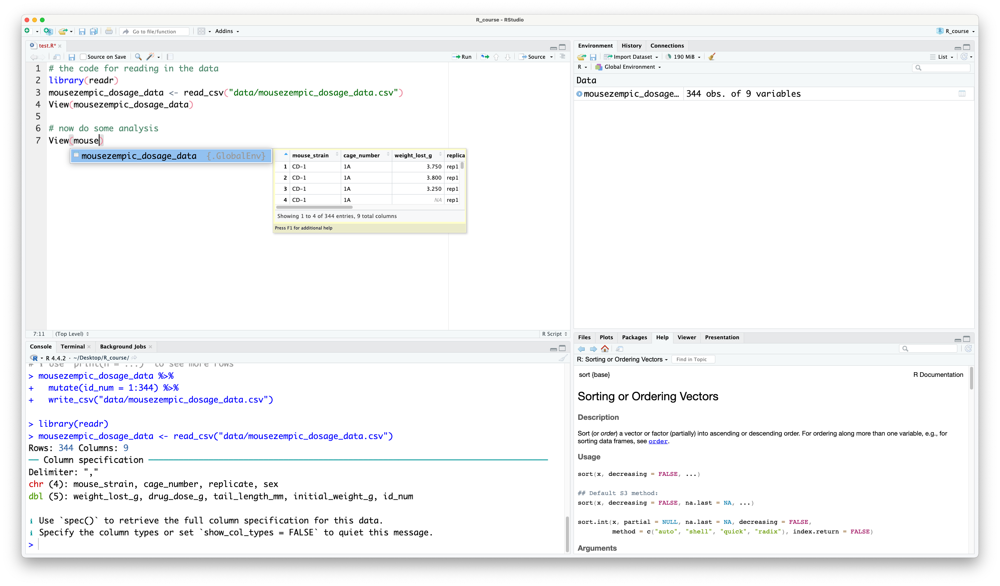
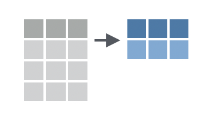
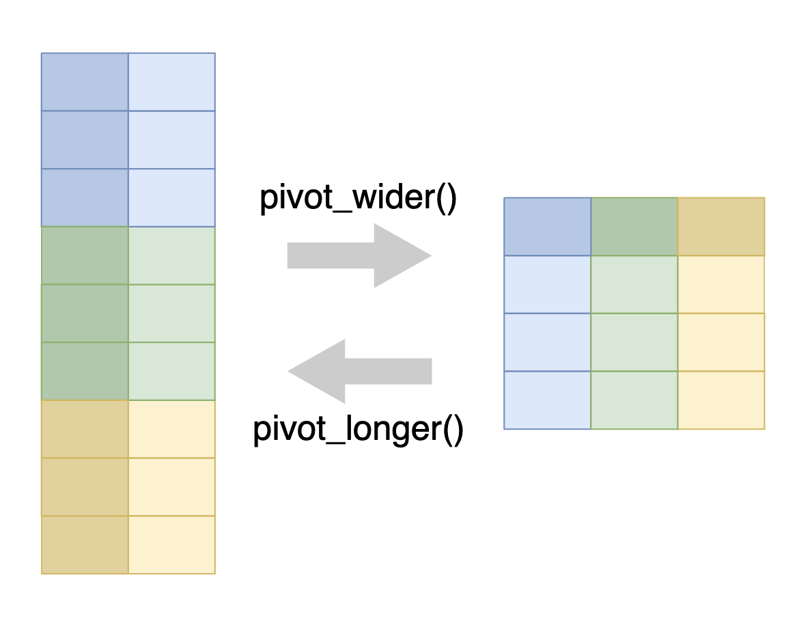

In this session we will learn how to manipulate and summarise data using the dplyr package (with a little help from the tidyr package too).
Learning Objectives
At the end of this session, learners should be able to:
Use the pipe (%>%) to chain multiple functions together
Design chains of dplyr functions to manipulate data frames
Apply grouping for more complex analysis of data
Understand how pivot and join functions can be used to reshape and combine entire data frames
Recall how to save data frames to a file
Both dplyr and tidyr are contained within the tidyverse (along with readr) so we can load all of these packages at once using library(tidyverse):
# don't forget to load tidyverse!library(tidyverse)
── Attaching core tidyverse packages ──────────────────────── tidyverse 2.0.0 ──
✔ dplyr 1.1.4 ✔ readr 2.1.5
✔ forcats 1.0.0 ✔ stringr 1.5.1
✔ ggplot2 3.5.1 ✔ tibble 3.2.1
✔ lubridate 1.9.3 ✔ tidyr 1.3.1
✔ purrr 1.0.2
── Conflicts ────────────────────────────────────────── tidyverse_conflicts() ──
✖ dplyr::filter() masks stats::filter()
✖ dplyr::lag() masks stats::lag()
ℹ Use the conflicted package (<http://conflicted.r-lib.org/>) to force all conflicts to become errors
2.1 Chaining functions together with pipes
Pipes are a powerful feature of the tidyverse that allow you to chain multiple functions together. Pipes are useful because they allow you to break down complex operations into smaller steps that are easier to read and understand.
What do you think this code does? It calculates the mean of my_vector, rounds the result to the nearest whole number, and then converts the result to a character. But the code is a bit hard to read because you have to start from the inside of the brackets and work your way out.
Instead, we can use the pipe operator (%>%) to chain these functions together in a more readable way:
See how the code reads naturally from left to right? You can think of the pipe as being like the phrase “and then”. Here, we’re telling R: “Take my_vector, and then calculate the mean, and then round the result, and then convert it to a character.”
You’ll notice that we didn’t need to specify the input to each function. That’s because the pipe automatically passes the output of the previous function as the first input to the next function. We can still specify additional arguments to each function if we need to. For example, if we wanted to round the mean to 2 decimal places, we could do this:
R is clever enough to know that the first argument to round() is still the output of mean(), even though we’ve now specified the digits argument.
Plenty of pipes
There is another style of pipe in R, called the ‘base R pipe’ |>, which is available in R version 4.1.0 and later. The base R pipe works in a similar way to the magrittr pipe (%>%) that we use in this course, but it is not as flexible. We recommend using the magrittr pipe for now.
To type the pipe operator more easily, you can use the keyboard shortcut Cmd-shift-MCmd-shift-M (although once you get used to it, you might find it easier to type %>% manually).
Practice exercises
Try these practice questions to test your understanding
1. What is NOT a valid way to re-write the following code using the pipe operator: round(sqrt(sum(1:10)), 1). If you’re not sure, try running the different options in the console to see which one gives the same answer.
✗1:10 %>% sum() %>% sqrt() %>% round(1)
✔sum(1:10) %>% sqrt(1) %>% round()
✗1:10 %>% sum() %>% sqrt() %>% round(digits = 1)
✗sum(1:10) %>% sqrt() %>% round(digits = 1)
2. What is the output of the following code? letters %>% head() %>% toupper() Try to guess it before copy-pasting into R.
The invalid option is sum(1:10) %>% sqrt(1) %>% round(). This is because the sqrt() function only takes one argument, so you can’t specify 1 as an argument in addition to what is being piped in from sum(1:10). Note that some options used the pipe to send 1:10 to sum() (like 1:10 %>% sum()), and others just used sum(1:10) directly. Both are valid ways to use the pipe, it’s just a matter of personal preference.
The output of the code letters %>% head() %>% toupper() is "A" "B" "C" "D" "E" "F". The letters vector contains the lowercase alphabet, and the head() function returns the first 6 elements of the vector. Finally, the toupper() function then converts these elements to uppercase.
2.2 Basic data manipulation
To really see the power of the pipe, we will use it together with the dplyr package that provides a set of functions to easily filter, sort, select, and summarise data frames. These functions are designed to work well with the pipe, so you can chain them together to create complex data manipulations in a readable format.
For example, even though we haven’t covered the dplyr functions yet, you can probably guess what the following code does:
# use the pipe to chain together our data manipulation stepsmousezempic_dosage_data %>%filter(cage_number =="3E") %>%pull(weight_lost_g) %>%mean()
This code filters the mousezempic_dosage_data data frame to only include data from cage 3E, then pulls out the weight_lost_g column, and finally calculates the mean of the values in that column. The first argument to each function is the output of the previous function, and any additional arguments (like the column name in pull()) are specified in the brackets (like round(digits = 2) from the previous example).
We also used the enter key after each pipe %>% to break up the code into multiple lines to make it easier to read. This isn’t required, but is a popular style in the R community, so all the code examples in this session will follow this format.
We will now introduce some of the most commonly used dplyr functions for manipulating data frames. To showcase these, we will use the mousezempic_dosage_data that we practiced reading in last session. This imaginary dataset contains information on the weight lost by different strains of mice after being treated with different doses of MouseZempic®.
# read in the data, like we did in session 1mousezempic_dosage_data <-read_delim("~/Desktop/R_course/data/mousezempic_dosage_data.csv")
Rows: 344 Columns: 9
── Column specification ────────────────────────────────────────────────────────
Delimiter: ","
chr (4): mouse_strain, cage_number, replicate, sex
dbl (5): weight_lost_g, drug_dose_g, tail_length_mm, initial_weight_g, id_num
ℹ Use `spec()` to retrieve the full column specification for this data.
ℹ Specify the column types or set `show_col_types = FALSE` to quiet this message.
Before we start, let’s use what we learned in the previous session to take a look at mousezempic_dosage_data:
# it's a tibble, so prints nicelymousezempic_dosage_data
You might also like to use View() to open the data in a separate window and get a closer look.
Using RStudio autocomplete
Although it’s great to give our data a descriptive name like mousezempic_dosage_data, it can be a bit of a pain to type out every time. Luckily, RStudio has a handy autocomplete feature that can solve this problem. Just start typing the name of the object, and you’ll see it will popup:

RStudio autocomplete
You can then press TabTab to autocomplete it. If there are multiple objects that start with the same letters, you can use the arrow keys to cycle through the options.
Try using autocomplete this session to save yourself some typing!
2.2.1 Sorting data
Often, one of the first things you might want to do with a dataset is sort it. In dplyr, this is called ‘arranging’ and is done with the arrange() function.
Arrange orders rows by their values in one or more columns
By default, arrange() sorts in ascending order (smallest values first). For example, let’s sort the mousezempic_dosage_data data frame by the weight_lost_g column:
If we compare this to when we just printed our data above, we can see that the rows are now sorted so that the mice that lost the least weight are at the top.
Sometimes you might want to sort in descending order instead (largest values first). You can do this by putting the desc() function around your column name, inside arrange():
mousezempic_dosage_data %>%# put desc() around the column name to sort in descending orderarrange(desc(weight_lost_g))
# A tibble: 344 × 9
mouse_strain cage_number weight_lost_g replicate sex drug_dose_g
<chr> <chr> <dbl> <chr> <chr> <dbl>
1 Black 6 3E 6.3 rep1 male 0.00221
2 Black 6 3E 6.05 rep1 male 0.0023
3 Black 6 3E 6 rep2 male 0.0022
4 Black 6 3E 6 rep3 male 0.00222
5 Black 6 3E 5.95 rep2 male 0.00223
6 Black 6 3E 5.95 rep3 male 0.00229
7 Black 6 3E 5.85 rep1 male 0.00213
8 Black 6 3E 5.85 rep1 male 0.00217
9 Black 6 3E 5.85 rep3 male 0.0023
10 Black 6 3E 5.8 rep2 male 0.00229
# ℹ 334 more rows
# ℹ 3 more variables: tail_length_mm <dbl>, initial_weight_g <dbl>,
# id_num <dbl>
Now we can see the mice that lost the most weight are at the top.
Comments and pipes
Notice how in the previous example we have written a comment in the middle of the pipe chain. This is a good practice to help you remember what each step is doing, especially when you have a long chain of functions, and won’t cause any errors as long as you make sure that the comment is on its own line.
You can also write comments at the end of the line, just make sure it’s after the pipe operator %>%.
For example, these comments are allowed:
mousezempic_dosage_data %>%# a comment here is fine# a comment here is finearrange(desc(weight_lost_g))
# A tibble: 344 × 9
mouse_strain cage_number weight_lost_g replicate sex drug_dose_g
<chr> <chr> <dbl> <chr> <chr> <dbl>
1 Black 6 3E 6.3 rep1 male 0.00221
2 Black 6 3E 6.05 rep1 male 0.0023
3 Black 6 3E 6 rep2 male 0.0022
4 Black 6 3E 6 rep3 male 0.00222
5 Black 6 3E 5.95 rep2 male 0.00223
6 Black 6 3E 5.95 rep3 male 0.00229
7 Black 6 3E 5.85 rep1 male 0.00213
8 Black 6 3E 5.85 rep1 male 0.00217
9 Black 6 3E 5.85 rep3 male 0.0023
10 Black 6 3E 5.8 rep2 male 0.00229
# ℹ 334 more rows
# ℹ 3 more variables: tail_length_mm <dbl>, initial_weight_g <dbl>,
# id_num <dbl>
But this will cause an error, because the # is before the pipe, so R treats it as part of the comment (notice how the %>% has changed colour?) and doesn’t know how the two lines relate to each other. It tries to run them separately, which for the first line is ok (it will just print mousezempic_dosage_data):
mousezempic_dosage_data # this comment will cause an error %>%
Error in eval(expr, envir, enclos): object 'weight_lost_g' not found
But for the second line, there is an error that R doesn’t know what the weight_lost_g object is. That’s because it’s a column in the mousezempic_dosage_data data frame, so R only knows what it is in the context of the pipe chain containing that data frame.
You can also sort by multiple columns by passing multiple column names to arrange(). For example, to sort by the strain first and then by the amount of weight lost:
# sort by strain first, then by weight lostmousezempic_dosage_data %>%arrange(mouse_strain, weight_lost_g)
# A tibble: 344 × 9
mouse_strain cage_number weight_lost_g replicate sex drug_dose_g
<chr> <chr> <dbl> <chr> <chr> <dbl>
1 BALB C 2B 2.7 rep2 female 0.00192
2 BALB C 2B 2.9 rep1 female 0.00187
3 BALB C 2B 3.2 rep2 female 0.00187
4 BALB C 2B 3.25 rep1 female 0.00178
5 BALB C 2B 3.25 rep3 male 0.00187
6 BALB C 2B 3.25 rep3 female 0.00191
7 BALB C 2B 3.3 rep1 male 0.00197
8 BALB C 2B 3.3 rep1 female 0.00195
9 BALB C 2B 3.32 rep3 female 0.00199
10 BALB C 2B 3.35 rep2 female 0.00187
# ℹ 334 more rows
# ℹ 3 more variables: tail_length_mm <dbl>, initial_weight_g <dbl>,
# id_num <dbl>
This will sort the data frame by strain (according to alphabetical order, as it is a character column), and within each strain, they are then sorted by the amount of weight lost.
Piping into View()
In the above example, we sorted the data by strain and then by weight lost, but because there are so many mice in each strain, the preview shown in our console doesn’t allow us to see the full effect of the sorting.
One handy trick you can use with pipes is to add View() at the end of your chain to open the data in a separate window. Try running this code, and you’ll be able to scroll through the full dataset to check that the other mouse strains have also been sorted correctly:
# sort by strain first, then by weight lostmousezempic_dosage_data %>%arrange(mouse_strain, weight_lost_g) %>%View()
This is a great way to check that your code has actually done what you intended!
2.2.1.1 Extracting rows with the smallest or largest values
Slice functions are used to select rows based on their position in the data frame. The slice_min() and slice_max() functions are particularly useful, because they allow you to select the rows with the smallest or largest values in a particular column.
This is equivalent to using arrange() followed by head(), but is more concise:
# get the 10 mice with the lowest drug dosemousezempic_dosage_data %>%# slice_min() requires the column to sort by, and n = the number of rows to keepslice_min(drug_dose_g, n =10)
# A tibble: 13 × 9
mouse_strain cage_number weight_lost_g replicate sex drug_dose_g
<chr> <chr> <dbl> <chr> <chr> <dbl>
1 CD-1 3E 3.15 rep1 female 0.00172
2 CD-1 3E 3.4 rep1 female 0.00174
3 CD-1 1A 3.45 rep3 female 0.00176
4 CD-1 2B 3.25 rep1 female 0.00178
5 CD-1 2B 3.9 rep1 male 0.00178
6 CD-1 2B 2.9 rep2 female 0.00178
7 BALB C 2B 3.25 rep1 female 0.00178
8 CD-1 2B 2.98 rep1 <NA> 0.00179
9 CD-1 1A 3.7 rep1 <NA> 0.0018
10 CD-1 3E 3.6 rep1 male 0.0018
11 CD-1 3E 3.8 rep1 male 0.0018
12 CD-1 3E 3.95 rep1 male 0.0018
13 CD-1 2B 3.55 rep1 female 0.0018
# ℹ 3 more variables: tail_length_mm <dbl>, initial_weight_g <dbl>,
# id_num <dbl>
# get the top 5 mice that lost the most weightmousezempic_dosage_data %>%# slice_max() has the same arguments as slice_min()slice_max(weight_lost_g, n =5)
# A tibble: 6 × 9
mouse_strain cage_number weight_lost_g replicate sex drug_dose_g
<chr> <chr> <dbl> <chr> <chr> <dbl>
1 Black 6 3E 6.3 rep1 male 0.00221
2 Black 6 3E 6.05 rep1 male 0.0023
3 Black 6 3E 6 rep2 male 0.0022
4 Black 6 3E 6 rep3 male 0.00222
5 Black 6 3E 5.95 rep2 male 0.00223
6 Black 6 3E 5.95 rep3 male 0.00229
# ℹ 3 more variables: tail_length_mm <dbl>, initial_weight_g <dbl>,
# id_num <dbl>
But wait— neither of those pieces of code actually gave the number of rows we asked for! In the first example, we asked for the 10 mice with the lowest drug dose, but we got 13. And in the second example, we asked for the top 5 mice that lost the most weight, but we got 6. Why aren’t the slice_ functions behaving as expected?
If we take a look at the help page (type ?slice_min in the console), we learn that slice_min() and slice_max() have an argument called with_ties that is set to TRUE by default. If we want to make sure we only get the number of rows we asked for, we would have to set it to FALSE, like so:
# get the top 5 mice that lost the most weightmousezempic_dosage_data %>%# no ties allowed!slice_max(weight_lost_g, n =5, with_ties =FALSE)
# A tibble: 5 × 9
mouse_strain cage_number weight_lost_g replicate sex drug_dose_g
<chr> <chr> <dbl> <chr> <chr> <dbl>
1 Black 6 3E 6.3 rep1 male 0.00221
2 Black 6 3E 6.05 rep1 male 0.0023
3 Black 6 3E 6 rep2 male 0.0022
4 Black 6 3E 6 rep3 male 0.00222
5 Black 6 3E 5.95 rep2 male 0.00223
# ℹ 3 more variables: tail_length_mm <dbl>, initial_weight_g <dbl>,
# id_num <dbl>
This is an important lesson: sometimes functions will behave in a way that is unexpected, and you might need to read their help page or use other guides/google/AI to understand why.
Practice exercises
Try these practice questions to test your understanding
1. Which code would you use to sort the mousezempic_dosage_data data frame from biggest to smallest initial weight?
3. I’ve written the below code, but one of the comments is messing it up! Which one?
# comment Amousezempic_dosage_data # comment B %>%# comment Cslice_max(weight_lost_g, n =5, with_ties =FALSE) # comment D
✗Comment A
✔Comment B
✗Comment C
✗Comment D
Solutions
The correct code to sort the mousezempic_dosage_data data frame from biggest to smallest initial weight is mousezempic_dosage_data %>% arrange(desc(initial_weight_g)). The arrange() function is used to sort the data frame (although there is a sort() function in R, that’s not part of dplyr and won’t work the same way), and the desc() function is used to sort in descending order.
The correct code to extract the 3 mice with the highest initial weight from the mousezempic_dosage_data data frame is mousezempic_dosage_data %>% slice_max(initial_weight_g, n = 3). The slice_max() function is used to select the rows with the largest values in the initial_weight_g column, and the n = 3 argument specifies that we want to keep 3 rows. The arrange() function is not needed in this case, because slice_max() will automatically sort the data frame by the specified column.
The comment that is messing up the code is Comment B. The # symbol is before the pipe operator %>%, so R treats it as part of the comment and this breaks our chain of pipes. The other comments are fine, because they are either at the end of the line or on their own line. Basically, if a comment is changing the colour of the pipe operator (or any other bits of your code), it’s in the wrong place!
2.2.2 Filtering data (rows)
Filter allows you to filter rows using a logical test
In dplyr, the filter() function is used to subset rows based on their values. You provide a logical test, and filter() will keep the rows where the test is TRUE. We can write these tests using the comparison operators we learned in the previous session (e.g. ==, < and !=, see Section 1.3).
For example, to filter the mousezempic_dosage_data data frame to only include mice that lost more than 6g:
# A tibble: 2 × 9
mouse_strain cage_number weight_lost_g replicate sex drug_dose_g
<chr> <chr> <dbl> <chr> <chr> <dbl>
1 Black 6 3E 6.3 rep1 male 0.00221
2 Black 6 3E 6.05 rep1 male 0.0023
# ℹ 3 more variables: tail_length_mm <dbl>, initial_weight_g <dbl>,
# id_num <dbl>
Or to only include mice from cage 3E:
mousezempic_dosage_data %>%# remember that == is used for testing equalityfilter(cage_number =="3E") # don't forget the quotes either!
# A tibble: 168 × 9
mouse_strain cage_number weight_lost_g replicate sex drug_dose_g
<chr> <chr> <dbl> <chr> <chr> <dbl>
1 CD-1 3E 3.4 rep1 female 0.00174
2 CD-1 3E 3.6 rep1 male 0.0018
3 CD-1 3E 3.8 rep1 female 0.00189
4 CD-1 3E 3.95 rep1 male 0.00185
5 CD-1 3E 3.8 rep1 male 0.0018
6 CD-1 3E 3.8 rep1 female 0.00187
7 CD-1 3E 3.55 rep1 male 0.00183
8 CD-1 3E 3.2 rep1 female 0.00187
9 CD-1 3E 3.15 rep1 female 0.00172
10 CD-1 3E 3.95 rep1 male 0.0018
# ℹ 158 more rows
# ℹ 3 more variables: tail_length_mm <dbl>, initial_weight_g <dbl>,
# id_num <dbl>
2.2.2.1 Combining logical tests
Sometimes we want to filter based on multiple conditions. Here we will show some more advanced operators that can be used to combine logical tests.
The & operator is used to combine two logical tests with an ‘and’ condition. For example, to filter the data frame to only include mice that have a tail length greater than 19mm and are female:
mousezempic_dosage_data %>%filter(tail_length_mm >19& sex =="female")
The | operator is used to combine two logical tests with an ‘or’ condition. For example, to filter the data frame to only include mice that have an initial weight less than 35g or a tail length less than 14mm:
The %in% operator can be used to filter based on a vector of multiple values (c(x, y)). It’s particularly useful when you have a few character values you want to filter on, as it is shorter to type than | (or).
For example, to filter the data frame to only include mice from cages 3E or 1A, we could use | like this:
2. What is NOT a valid way to filter the mousezempic_dosage_data data frame to only include mice that lost more than 4g, and have an initial weight less than 40g?
✗Filters the data frame to remove mice from the “BALB C” and “Black 6” strains, who only lost between 3 and 5g of weight, and then sorts the data frame by drug dose.
✗Filters the data frame to remove mice from the “BALB C” and “Black 6” strains, that lost between 3 and 5g of weight, and then sorts the data frame by drug dose in descending order.
✗Filters the data frame to only include mice from the “BALB C” and “Black 6” strains, that lost between 3 and 5g of weight, and then sorts the data frame by drug dose.
✔Filters the data frame to only include mice from the “BALB C” and “Black 6” strains, that lost between 3 and 5g of weight, and then sorts the data frame by drug dose in descending order.
Solutions
The correct code to filter the mousezempic_dosage_data data frame to only include mice from replicate 2 is mousezempic_dosage_data %>% filter(replicate == "rep2"). Option A is incorrect because 2 is not a value of replicate (when filtering you need to know what values are actually in your columns! So make sure to View() your data first). Option B is incorrect because the replicate column is a character column, so you need to use quotes around the value you are filtering on. Option D is incorrect because = is not the correct way to test for equality, you need to use ==.
The invalid option is mousezempic_dosage_data %>% filter(weight_lost_g > 4) %>% (initial_weight_g < 40). This is because the second filtering step is missing the name of the filter function, so R doesn’t know what to do with (initial_weight_g < 40). The other options are valid ways to filter the data frame based on the specified conditions; note that we can use multiple filter() functions in a row to apply multiple conditions, or the & operator to combine them into a single filter() function. It’s just a matter of personal preference.
The correct description of the code is that it filters the data frame to only include mice from the “BALB C” and “Black 6” strains, then filters those further to only those that lost between 3 and 5g of weight, and finally sorts the data frame by drug dose in descending order.
2.2.3 Dealing with missing values
Missing values are a common problem in real-world datasets. In R, missing values are represented by NA. In fact, if you look at the mousezempic_dosage_data data frame we’ve been using, you’ll see that some of the cells contain NA: try spotting them with the View() function.
You can also find missing values in a data frame using the is.na() function in combination with filter(). For example, to find all the rows in the mousezempic_dosage_data data frame that have a missing value for the drug_dose_g column:
# A tibble: 2 × 9
mouse_strain cage_number weight_lost_g replicate sex drug_dose_g
<chr> <chr> <dbl> <chr> <chr> <dbl>
1 CD-1 1A NA rep1 <NA> NA
2 Black 6 3E NA rep3 <NA> NA
# ℹ 3 more variables: tail_length_mm <dbl>, initial_weight_g <dbl>,
# id_num <dbl>
The problem with missing values is that they can cause problems when you try to perform calculations on your data. For example, if you try to calculate the mean of a column that contains even a single missing value, the result will also be NA:
# try to calculate the mean of the drug_dose_g column# remember from session 1 that we can use $ to access columns in a data framemousezempic_dosage_data$drug_dose_g %>%mean()
[1] NA
NA values in R are therefore referred to as ‘contagious’: if you put an NA in you usually get an NA out. If you think about it, that makes sense— when we don’t know the value of a particular mouse’s drug dose, how can we calculate the average? That missing value could be anything.
For this reason, it’s important to deal with missing values before performing calculations. Many functions in R will have an argument called na.rm that you can set to TRUE to remove missing values before performing the calculation. For example, to calculate the mean of the drug_dose_g column with the missing values excluded:
# try to calculate the mean of the drug_dose_g column# remember from session 1 that we can use $ to access columns in a data framemousezempic_dosage_data$drug_dose_g %>%mean(na.rm =TRUE)
[1] 0.002009152
This time, the result is a number, because the missing values have been removed before the calculation.
But not all functions have an na.rm argument. In these cases, you can remove rows with missing values. This can be done for a single column, using the filter() function together with is.na():
# remove rows with missing values in the drug_dose_g columnmousezempic_dosage_data %>%# remember the ! means 'not', it negates the result of is.na()filter(!is.na(drug_dose_g))
Sometimes, instead of removing rows with missing values, you might want to replace them with a specific value. This can be done using the replace_na() function from the tidyr package. replace_na() takes a list() which contains each of the column names you want to edit, and the value that should be used.
For example, to replace missing values in the weight_lost_g columns with 0, replace missing values in the sex column with ‘unknown’ and leave the rest of the data frame unchanged:
# replace missing values in the drug_dose_g column with 0mousezempic_dosage_data %>%# here we need to provide the column_names = values_to_replace# this needs to be contained within a list()replace_na(list(weight_lost_g =0, sex ="unknown"))
When deciding how to handle missing values, you might have prior knowledge that NA should be replaced with a specific value, or you might decide that removing rows with NA is the best approach for your analysis.
For example, maybe we knew that the mice were given a weight_lost_g of NA if they didn’t lose any weight, it would then make sense to replace those with 0 (as we did in the code above). However, if the drug_dose_g column was missing simply because the data was lost, we might choose to remove those rows entirely.
It’s important to think carefully about how missing values should be handled in your analysis.
Practice exercises
Try these practice questions to test your understanding
1. What would be the result of running this R code: mean(c(1, 2, 4, NA))
✗2.333333
✗0
✔NA
✗An error
2. Which line of code would you use to filter the mousezempic_dosage_data data frame to remove mice that have a missing value in the tail_length_mm column?
The result of running the code mean(c(1, 2, 4, NA)) is NA. This is because the NA value is ‘contagious’, so when you try to calculate the mean of a vector that contains an NA, the result will also be NA. If we wanted to calculate the mean of the vector without the NA, we would need to use the na.rm = TRUE argument.
The correct line of code to filter the mousezempic_dosage_data data frame to remove mice that have a missing value in the tail_length_mm column is mousezempic_dosage_data %>% filter(!is.na(tail_length_mm)). The ! symbol is used to negate the result of is.na(), so we are filtering to keep the rows where tail_length_mm is not NA. We can’t use the first option with the != NA because NA is a special value in R that represents missing data, and it can’t be compared to anything, and the third option is incorrect because na.omit() removes entire rows with missing values, rather than just filtering based on a single column.
The correct line of code to replace missing values in the initial_weight_g column with the value 35 is mousezempic_dosage_data %>% replace_na(list(initial_weight_g = 35)). The replace_na() function takes a list() that contains the column names you want to replace and the values you want to replace them with. We only need to use a single equal sign here as we’re not testing for equality, we’re assigning a value.
2.2.4 Selecting columns
Select allows you to select only certain columns
While filter() is used to subset rows, select() is used to subset columns. You can use select() to keep only the columns you’re interested in, or to drop columns you don’t need.
The select() function takes the names of the columns that you want to keep/remove (no vector notation c() or quotation marks "" necessary). For example, to select only the mouse_strain, initial_weight_g, and weight_lost_g columns from the mousezempic_dosage_data data frame:
There are also some helper functions that can be used to select columns based on their names :
There are several helper functions that can be used with the select function
Function
Description
Example
starts_with()
select column(s) that start with a certain string
select all columns starting with the letter i
select(starts_with("i"))
ends_with()
select column(s) that end with a certain string
select all columns ending with _g
select(ends_with("_g"))
contains()
select column(s) that contain a certain string
select all columns containing the word ‘weight’
select(contains("weight"))
You need to use quotation marks around the arguments in these helper functions, as they aren’t full column names, just strings of characters.
Try using these helper functions to select columns from the mousezempic_dosage_data data frame!
Reordering columns
We can reorder columns using the relocate() function, which works similarly to select() (except it just moves columns around rather than dropping/keeping them). For example, to move the sex column to before the cage_number column:
mousezempic_dosage_data %>%# first the name of the column to move, then where it should gorelocate(sex, .before = cage_number)
Re-ordering columns isn’t necessary, but it makes it easier to see the data you’re most interested in within the console (since often not all of the columns will fit on the screen at once). For example, if we are doing a lot of computation on the initial_weight_g column, we’d probably like to have that near the start so we can easily check it.
Note that the output of the select() function is a new data frame, even if you only select a single column:
# select the mouse_strain columnmousezempic_dosage_data %>%select(mouse_strain) %>%# recall from session 1 that class() tells us the type of an objectclass()
[1] "tbl_df" "tbl" "data.frame"
Sometimes, we instead want to get the values of a column as a vector.
Pull allows you to pull acolumn out of a data frame as a vector
We can do this by using the pull() function, which extracts a single column from a data frame as a vector:
# get the mouse_strain column as a vectormousezempic_dosage_data %>%pull(mouse_strain) %>%class()
[1] "character"
We can see that the class of the output is now a vector, rather than a data frame. This is important because some functions only accept vectors, not data frames, like mean() for example:
# this will give an errormousezempic_dosage_data %>%select(initial_weight_g) %>%mean(na.rm =TRUE)
Warning in mean.default(., na.rm = TRUE): argument is not numeric or logical:
returning NA
[1] NA
# this will workmousezempic_dosage_data %>%pull(initial_weight_g) %>%mean(na.rm =TRUE)
[1] 43.92193
Note how both times we used na.rm = TRUE to remove missing values before calculating the mean.
You might remember that we used the $ operator in the previous session to extract a single column from a data frame, so why use pull() instead? The main reason is that pull() works within a chain of pipes, whereas $ doesn’t.
For example, let’s say we want to know the average initial weight of mice that lost at least 4g. We can do this by chaining filter() and pull() together:
mousezempic_dosage_data %>%# filter to mice that lost at least 4gfilter(weight_lost_g >=4) %>%# get the initial_weight_g column as a vectorpull(initial_weight_g) %>%# calculate mean, removing NA valuesmean(na.rm =TRUE)
[1] 46.48023
Practice exercises
Try these practice questions to test your understanding
1. Which line of code would NOT be a valid way to select the drug_dose_g, initial_weight_g, and weight_lost_g columns from the mousezempic_dosage_data data frame?
The line of code that would NOT be a valid way to select the drug_dose_g, initial_weight_g, and weight_lost_g columns from the mousezempic_dosage_data data frame is mousezempic_dosage_data %>% select(contains("g")). This line of code would select all columns that contain the letter ‘g’, which would include columns like cage_number and tail_length_mm. We need to specify either ends_with("g") or contains("_g") to only get those with _g at the end. The other options are valid ways to select the specified columns, although some are more efficient than others!
The correct way to extract the initial_weight_g column from the mousezempic_dosage_data data frame as a vector is mousezempic_dosage_data %>% pull(initial_weight_g). The pull() function is used to extract a single column from a data frame as a vector. The other options are incorrect because filter() is used to subset rows, $ is not used in a pipe chain, and select() is outputs a data frame, not extract them as vectors.
The correct way to move the sex column to the end of the mousezempic_dosage_data data frame is using the relocate() function like this: mousezempic_dosage_data %>% relocate(sex, .after = last_col()). The last_col() function is used to refer to the last column in the data frame. The other options are incorrect because reorder() is not a valid function, and you need to remember to include the brackets () when using last_col().
2.2.5 Modifying data
So far, we’ve learned how to filter rows and select columns from a data frame. But what if we want to change the data itself? This is where the mutate() function comes in.
Mutate allows you to add new columns to a data frame
The mutate() function is used to add new columns to a data frame, or modify existing columns, often by performing some sort of calculation. For example, we can add a new column to mousezempic_dosage_data that contains the drug dose in mg (rather than g):
mousezempic_dosage_data %>%# add a new column called drug_dose_mg# convert drug_dose_g to mg by multiplying by 1000mutate(drug_dose_mg = drug_dose_g *1000) %>%# just select the drug dose columns so we can compare themselect(drug_dose_g, drug_dose_mg)
You can see that the drug_dose_mg column has been added to the data frame, and it contains, for each row, the value of the drug_dose_g column multiplied by 1000 (NA values are preserved).
These calculations can be as complex as you like, and involve multiple different columns. For example, to add a new column to the mousezempic_dosage_data data frame that calculates the weight lost as a percentage of the initial weight:
mousezempic_dosage_data %>%# calculate the % of initial weight that was lostmutate(weight_lost_percent = (weight_lost_g / initial_weight_g) *100)
A useful helper function for mutate() is the case_when() function, which allows you to create new columns based on multiple conditions. We do this with the notation case_when(condition1 ~ value1, condition2 ~ value2, ...).
For example, to add a new column to the mousezempic_dosage_data data frame that categorises the mice based on how much weight they lost:
mousezempic_dosage_data %>%# create a new column called weight_loss_categorymutate(weight_loss_category =case_when( weight_lost_g <4~"Low", # separate conditions with a comma weight_lost_g <=5~"Medium", weight_lost_g >5~"High" )) %>%select(weight_lost_g, weight_loss_category)
# A tibble: 344 × 2
weight_lost_g weight_loss_category
<dbl> <chr>
1 3.75 Low
2 3.8 Low
3 3.25 Low
4 NA <NA>
5 3.45 Low
6 3.65 Low
7 3.62 Low
8 4.68 Medium
9 3.48 Low
10 4.25 Medium
# ℹ 334 more rows
Note that the conditions are evaluated in order, and the first condition that is TRUE is the one that is used. So if a mouse lost 4.5g, it case_when() would first test if it fits the ‘Low’ category (by checking if 4.5 is less than 4, which it isn’t), and then if it fits the ‘Medium’ category (by checking if 4.5 is less than or equal to 5). Since it is, the mouse would be categorised as ‘Medium’.
Fallback with default value(s)
In the above example, what would happen if a mouse lost -1g (gained weight)? It wouldn’t fit any of the conditions, so it would get an NA in the weight_loss_category column. Sometimes you might want this behaviour, but other times you would prefer to specify a ‘fallback’ category that will be assigned to everything that doesn’t fit in the other categories. You can do this by including a .default = argument at the end of the case_when() function. For example:
mousezempic_dosage_data %>%# create a new column called weight_loss_categorymutate(weight_loss_category =case_when( weight_lost_g <4~"Low", # separate conditions with a comma weight_lost_g <=5~"Medium", weight_lost_g >5~"High",.default ="Unknown" )) %>%select(weight_lost_g, weight_loss_category)
# A tibble: 344 × 2
weight_lost_g weight_loss_category
<dbl> <chr>
1 3.75 Low
2 3.8 Low
3 3.25 Low
4 NA Unknown
5 3.45 Low
6 3.65 Low
7 3.62 Low
8 4.68 Medium
9 3.48 Low
10 4.25 Medium
# ℹ 334 more rows
Notice how the NA value in the fourth row is now categorised as ‘Unknown’.
One final thing to note is that mutate() can be used to modify existing columns as well as add new ones. To do this, just use the name of the existing column as the ‘new’ one.
For example, let’s use mutate() together with case_when() to modify the sex column so that it uses M and F instead male and female:
mousezempic_dosage_data %>%# modify sex columnmutate(sex =case_when( sex =="female"~"F", sex =="male"~"M",# if neither, code it as 'X'.default ="X"))
# A tibble: 344 × 9
mouse_strain cage_number weight_lost_g replicate sex drug_dose_g
<chr> <chr> <dbl> <chr> <chr> <dbl>
1 CD-1 1A 3.75 rep1 M 0.00181
2 CD-1 1A 3.8 rep1 F 0.00186
3 CD-1 1A 3.25 rep1 F 0.00195
4 CD-1 1A NA rep1 X NA
5 CD-1 1A 3.45 rep1 F 0.00193
6 CD-1 1A 3.65 rep1 M 0.0019
7 CD-1 1A 3.62 rep1 F 0.00181
8 CD-1 1A 4.68 rep1 M 0.00195
9 CD-1 1A 3.48 rep1 X 0.00193
10 CD-1 1A 4.25 rep1 X 0.0019
# ℹ 334 more rows
# ℹ 3 more variables: tail_length_mm <dbl>, initial_weight_g <dbl>,
# id_num <dbl>
Practice exercises
Try these practice questions to test your understanding
1. What line of code would you use to add a new column to the mousezempic_dosage_data data frame that converts the tail_length_mm column to cm?
Hint: if you’re not sure, try running the code, but pipe it into View() so that you can take a good look at what’s happening in the mouse_strain column.
✗Renames the strains of all the mice to “B6”, regardless of their original strain
✗This code will produce an error
✗Adds a new column that categorises the mice based on their strain, so that any mice from the “Black 6” strain are now called “B6”, and all other strains are left unchanged.
✔Modifies the mouse_strain column so that any mice from the “Black 6” strain are now called “B6”, and all other strains are left unchanged.
Solutions
The correct line of code to add a new column to the mousezempic_dosage_data data frame that converts the tail_length_mm column to cm is mousezempic_dosage_data %>% mutate(tail_length_cm = tail_length_mm / 10).
The code mousezempic_dosage_data %>% arrange(desc(weight_lost_g)) %>% mutate(weight_lost_rank = row_number()) adds a new column to the data frame that ranks the mice based on how much weight they lost, with 1 being the mouse that lost the most weight. First, the arrange(desc(weight_lost_g)) function sorts the data frame by the weight_lost_g column in descending order, and then the mutate(weight_lost_rank = row_number()) function adds a new column that assigns a rank to each row based on its position (row number) in the sorted data frame.
The error is that the conditions in the case_when() function are not separated by commas. Each condition should be followed by a comma because these are like the arguments in a function. Remeber that it’s optional to include the .default = condition at the end of the case_when() function.
The code mousezempic_dosage_data %>% mutate(mouse_strain = case_when(mouse_strain == "Black 6" ~ "B6", .default = mouse_strain)) modifies the mouse_strain column so that any mice from the “Black 6” strain are now called “B6”, and all other strains are left unchanged. As we are calling our column mouse_strain, no new column is being created (we are modifying the existing one) and the .default = mouse_strain condition acts as a fallback to keep the original values (that already exist in the mouse_strain column) for any rows that don’t match our first condition (strain being “Black 6”).
2.2.6 Summarising data

Summarise allows you to calculate summary statistics that collapse many rows into one
The summarise() (or summarize(), if you prefer US spelling) function is used to calculate summary statistics on your data. It takes similar arguments to mutate(), but instead of adding a new column to the data frame, it returns a new data frame with a single row and one column for each summary statistic you calculate.
For example, to calculate the mean weight lost by the mice in the mousezempic_dosage_data data frame:
We can also calculate multiple summary statistics at once. For example, to calculate the mean, median, and standard deviation of the weight lost by the mice:
✗Calculates the average, minimum, and maximum tail length of the mice in the mousezempic_dosage_data data frame.
✔Produces a data frame containing one column for each of the average, minimum, and maximum tail length of the mice in the mousezempic_dosage_data data frame.
✗Finds the average tail length of the mice in the mousezempic_dosage_data data frame.
✗Produces a vector containing the average, minimum, and maximum tail length of the mice in the mousezempic_dosage_data data frame.
2. What is NOT a valid way to calculate the mean weight lost by the mice in the mousezempic_dosage_data data frame?
1. The code produces a data frame containing one column for each of the average, minimum, and maximum tail length of the mice in the mousezempic_dosage_data data frame.
2. The line of code that is NOT a valid way to calculate the mean weight lost by the mice in the mousezempic_dosage_data data frame is mousezempic_dosage_data %>% mean(weight_lost_g, na.rm = TRUE). This line of code is incorrect because the mean() function is being used directly on the data frame, rather than within a summarise() function. The other options are valid ways to calculate the mean weight lost by the mice in the mousezempic_dosage_data data frame (although note that the second option uses pull() to extract the weight_lost_g column as a vector before calculating the mean, so the mean value is stored in a vector rather than in a data frame).
2.3 Grouping
Using summarise with the .by option allows you to create separate summaries for different ‘groups’ of data
Grouping is a powerful concept in in dplyr that allows you to perform operations on subsets of your data. For example, you might want to calculate the mean weight lost by mice in each cage, or find the mouse with the longest tail in each strain.
We can group data using the .by argument that exists in many dplyr functions, like summarise() and mutate(), and passing it the name(s) of column(s) to group by. For example, to calculate the mean weight lost by mice in each cage:
# A tibble: 3 × 2
cage_number mean_weight_lost
<chr> <dbl>
1 1A 3.71
2 3E 4.72
3 2B 3.71
Like when we first learned the summarise function above, we give our new column a name (mean_weight_lost), and then we assign its value to be the mean of the weight_lost_g column (with NAs removed). But this time, we also added the .by argument to specify the column we want to group by (cage_number, in this case). This will return a data frame with the mean weight lost by mice in each cage.
Grouping is a powerful tool for exploring your data and can help you identify patterns that might not be obvious when looking at the data as a whole. For example, notice how this grouped summary reveals that mice in cage 3E lost more weight than those in the other two cages.
It’s also possible to group by multiple columns by passing a vector of column names to the .by argument. For example, to calculate the mean weight lost by mice in each cage and strain:
mousezempic_dosage_data %>%summarise(mean_weight_lost =mean(weight_lost_g, na.rm =TRUE),# group by both cage_number and mouse_strain.by =c(cage_number, mouse_strain))
# A tibble: 5 × 3
cage_number mouse_strain mean_weight_lost
<chr> <chr> <dbl>
1 1A CD-1 3.71
2 3E CD-1 3.71
3 2B CD-1 3.69
4 3E Black 6 5.08
5 2B BALB C 3.73
Of course, mean() is not the only function that we can use within summarise(). We can use any function that takes a vector of values and returns a single value, like median(), sd(), or max(). We can also use multiple functions at once, by giving each column a name and specifying the function we want to use:
Here, we also used the n() function to calculate the number of mice in each cage. This is a special helper function that works within summarise to count the number of rows in each group.
To .by or not to .by?
In the dplyr package, there are two ways to group data: using the .by argument within various functions (as we have covered so far), or using the group_by() function, then performing your operations and ungrouping with ungroup().
For example, we’ve seen above how to calculate the mean weight lost by mice in each cage using the .by argument:
# A tibble: 3 × 2
cage_number mean_weight_lost
<chr> <dbl>
1 1A 3.71
2 2B 3.71
3 3E 4.72
The two methods are equivalent, but using the .by argument within functions can be more concise and easier to read. Still, it’s good to be aware of group_by() and ungroup() as they are widely used, particularly in older code.
Although grouping is most often used with summarise(), it can be used with dplyr functions too. For example mutate() function can also be used with grouping to add new columns to the data frame based on group-specific calculations. Let’s say we wanted to calculate the Z-score (also known as the standard score) to standardise the weight lost by each mouse within each strain.
As a reminder, the formula for calculating the Z-score is \(\frac{x - \mu}{\sigma}\), where \(x\) is the value (in our case the weight_lost_g column), \(\mu\) is the mean, and \(\sigma\) is the standard deviation.
We can calculate this for each mouse in each strain using the following code:
mousezempic_dosage_data %>%# remove NAs before calculating the mean and SDfilter(!is.na(weight_lost_g)) %>%mutate(weight_lost_z = (weight_lost_g -mean(weight_lost_g)) /sd(weight_lost_g), .by = mouse_strain) %>%# select the relevant columnsselect(mouse_strain, weight_lost_g, weight_lost_z)
Unlike when we used .by with summarise(), we still get the same number of rows as the original data frame, but now we have a new column weight_lost_z that contains the Z-score for each mouse within each strain. This could be useful for identifying outliers or comparing the weight lost by each mouse to the average for its strain.
Practice exercises
Try these practice questions to test your understanding
1. Which line of code would you use to calculate the median tail length of mice belonging to each strain in the mousezempic_dosage_data data frame?
✗Calculates the maximum tail length of all mice for each strain in the mousezempic_dosage_data data frame
✗Calculates the maximum tail length of all mice for each replicate in the mousezempic_dosage_data data frame
✗Calculates the maximum tail length of all mice in the mousezempic_dosage_data data frame
✔Calculates the maximum tail length of mice in each unique combination of strain and replicate in the mousezempic_dosage_data data frame.
3. I want to count how many male and how many female mice there are for each strain in the mousezempic_dosage_data data frame. Which line of code would I use?
The correct line of code to calculate the median tail length of mice belonging to each strain in the mousezempic_dosage_data data frame is mousezempic_dosage_data %>% summarise(median_tail_length = median(tail_length_mm, na.rm = TRUE), .by = mouse_strain). Remember to use na.rm = TRUE to remove any missing values before calculating the median, and to use .by to specify the column to group by (not by). Seeing as we want to calculate the median (collapse down to a single value per group), we need to use summarise() rather than mutate().
The code mousezempic_dosage_data %>% summarise(max_tail_len = max(tail_length_mm, na.rm = TRUE), .by = c(mouse_strain, replicate)) calculates the maximum tail length of mice in each unique combination of strain and replicate in the mousezempic_dosage_data data frame.
The correct line of code to count how many male and how many female mice there are for each strain in the mousezempic_dosage_data data frame is mousezempic_dosage_data %>% summarise(count = n(), .by = c(mouse_strain, sex)). We need to group by both mouse_strain and sex to get the count for each unique combination of strain and sex. Don’t forget that we specify the column names as a vector when grouping by multiple columns.
The correct line of code to find the proportion of weight lost by each mouse in each cage in the mousezempic_dosage_data data frame is mousezempic_dosage_data %>% mutate(weight_lost_proportion = weight_lost_g / sum(weight_lost_g, na.rm = TRUE), .by = cage_number). We use mutate() because we want a value for each mouse (each row in our data), rather than to collapse down to a single value for each group (cage number in this case). Be careful that you use the .by argument within the mutate() function call, not within the sum() function by mistake (this is what is wrong with the third option).
2.4 Reshaping and combining data
In the previous section, we learned how to filter, select, mutate, and summarise data. These are the most common operations you’ll perform on your data, and all generally revolve around working with specific columns or rows of your data frame. But what if you need to change the structure of your entire data frame? Re-shaping (with pivot_ functions) and combining (with join functions) data are two more advanced operations that can help you do this.
2.4.1 Reshaping data with pivot functions
Pivoting is a way to change the structure of your data frame by rotating it so that rows become columns and vice versa. This can be useful when you want to change the way your data is organised, for example, to make it easier to plot or analyse.

Pivot functions allow you to change the structure of your data frame
The pivot_longer() function is used to pivot data from wide to long format, and the pivot_wider() function is used to pivot data from long to wide format.
2.4.1.1 Pivot wider
A common use case for pivot_wider() is to make a contingency table, which shows the number of observations for each combination of two variables. This is often easier to read than the same information in long format.
For example, let’s say we want to create a table that shows how many mice there are of each strain, in each cage number. We can achieve this in a long format using summarise() as we learned in the previous section:
# A tibble: 5 × 3
cage_number mouse_strain n_mice
<chr> <chr> <int>
1 1A CD-1 52
2 3E CD-1 44
3 2B CD-1 56
4 3E Black 6 124
5 2B BALB C 68
Notice how we have a row for each unique combination of cage_number and mouse_strain. Instead, we can use pivot_wider() to create a table where each row represents a unique cage_number and each column represents a unique mouse_strain.
To use a pivot_wider() you need to tell R two bits of information:
What the new columns should be (with names_from)
Where the values in these columns should come from (with values_from).
In this case, we want the mouse strains to be our new columns (so names_from = mouse_strain), and the average weight lost to be the values in the table (values_from = n_mice). Putting it all together, here is the code to make our summary table:
# A tibble: 3 × 4
cage_number `CD-1` `Black 6` `BALB C`
<chr> <int> <int> <int>
1 1A 52 NA NA
2 3E 44 124 NA
3 2B 56 NA 68
Notice how NA values are used where there is no data for a particular combination of cage_number and mouse_strain.
2.4.1.2 Pivot longer
While wide data can be easier to read, long data is often easier to work with. That’s because a lot of the tidyverse functions we’ve learned so far (like filter(), mutate(), and summarise()) work in a row-wise fashion, which is more natural with long data.
To demonstrate pivot_longer(), we will introduce a new data frame called mousezempic_expression_data. This data frame contains the expression levels of two genes (TH and PRLH) suspected to be upregulated in mice taking MouseZempic, as well as one housekeeping gene (HPRT1), all measured in triplicate. You can download it here:
Or run the following code in your R console to download it:
Once you’ve done that, read it into R (notice that it’s a .tsv file, so we need to use either read_tsv() or read_delim(), not read_csv())
# read in the datamousezempic_expression_data <-read_tsv("data/mousezempic_expression_data.tsv")
Rows: 453 Columns: 11
── Column specification ────────────────────────────────────────────────────────
Delimiter: "\t"
chr (1): group
dbl (10): id_num, TH_rep1, TH_rep2, TH_rep3, PRLH_rep1, PRLH_rep2, PRLH_rep3...
ℹ Use `spec()` to retrieve the full column specification for this data.
ℹ Specify the column types or set `show_col_types = FALSE` to quiet this message.
As you can see, the data is in wide format, with each row representing a different mouse (identified by its id_num) and each column representing a different measurement of a gene. To put this data into a long format (where each measurement is contained on a separate row), we can use pivot_longer(), specifying three arguments:
cols: the columns to pivot from. You can use selection helpers like contains() or starts_with() to easily select multiple columns at once.
names_to: the name of a new column that will contain the old column names.
values_to: the name of a new column that will contain the values from the old columns.
In this particular case here’s what the code would look like:
cols = contains("_rep"): This tells R to pivot all columns that contain the string “_rep”. In this case, that’s the columns TH_rep1, TH_rep2, TH_rep3, PRLH_rep1, PRLH_rep2, PRLH_rep3, HPRT1_rep1, HPRT1_rep2, and HPRT1_rep3.
names_to = "measurement": This tells R to create a new column called ‘measurement’ that contains the names of the old columns. So, for example, the value of the ‘measurement’ column for the first row will be ‘TH_rep1’.
values_to = "expression_level": This tells R to create a new column called ‘expression_level’ that contains the values from the old columns. So, for example, the value of the ‘expression_level’ column for the first row will be the value of the TH_rep1 column.
After running this code, you’ll see that the data frame is now in long format, with each row representing a different measurement of a gene for a different mouse.
Perplexed by pivoting?
Pivoting can be a bit tricky to get your head around! Often when you’re doing analysis, you’ll run into the problem of knowing that you need to pivot, but not knowing exactly what arguments to use. In these cases, it can be helpful to look at examples online, like those in the R for Data Science book, or to just experiment with different arguments until you get the result you want.
2.4.2 Combining data with join functions
Another way you might need to change the structure of your data is by combining it with other data frames. This is where the join functions come in. There are many different types of joins in dplyr (which you can read about here if you’re interested), but the most useful one is the left_join() function.
The left_join() function allows you to combine two data frames
left_join() is used to combine two data frames based on a common column. It takes three arguments - the first data frame, the second data frame, and the common column to join on. The reason it’s called a ‘left join’ is because it keeps all the rows from the first data frame (the ‘left’ data frame), and only adds rows from the second data frame (the ‘right’ data frame) if they match the common column.
For example, we can join the mousezempic_dosage_data data frame with the mousezempic_expression_data data frame based on the id_num column, which is common to both data frames:
# example of using it in a pipe# here mousezempic_dosage_data is the left data frame (first) data frame passed on by the pipemousezempic_dosage_data %>%left_join(mousezempic_expression_data, by ="id_num")
This code will return a new data frame that contains all the columns from mousezempic_dosage_data and all the columns from mousezempic_expression_data, with the rows matched based on the id_num column. If there is no match for a particular id_num in the mousezempic_expression_data data frame, the columns from that data frame will be filled with NA. Rows that only appear in the mousezempic_expression_data data frame will not be included in the final data frame.
We can also use left_join() when our columns have different names (but contain the same value) using a named vector the format c("name1" = "name2"), where ‘name1’ is the name of the column in the left/first data frame (the one being piped in) and ‘name2’ is the name of the corresponding column in the right/second data frame.
For example, if the id_num column in the mousezempic_dosage_data data frame was called mouse_id instead, we could still join the two data frames using the following code:
mousezempic_dosage_data %>%# for the sake of this example, make a new column called mouse_idmutate(mouse_id = id_num) %>%# join the two data frames where mouse_id in the first data frame matches id_num in the second data frameleft_join(mousezempic_expression_data, by =c("mouse_id"="id_num"))
✗Pivots data into a wide format where there is a column for each sex.
✔Calculates the median tail length for each unique combination of mouse_strain and sex in the mousezempic_dosage_data data frame, then pivots into a wide format where there is a column for each sex.
✗Calculates the median tail length for each unique combination of mouse_strain and sex in the mousezempic_dosage_data data frame, then pivots into a wide format where there is a column for each mouse strain.
✗It just gives an error
2. I have run the following code to create a new column in the mousezempic_dosage_data data frame that gives the weight of the mice at the end of the experiment.
mousezempic_dosage_data %>%# add a column for the weight at the end of the experimentmutate(final_weight_g = initial_weight_g - weight_lost_g) %>%# select the relevant columns onlyselect(id_num, initial_weight_g, final_weight_g)
Which pivot function call would I use to take this data from a wide format (where there is a column for the final and initial weight) to a long format (where there is a row for each mouse and each weight measurement)?
3. Which of the following is NOT a valid way to join the mousezempic_dosage_data data frame with the mousezempic_expression_data data frame based on the id_num column?
✗mousezempic_dosage_data %>% left_join(mousezempic_expression_data, by = "id_num")
✗left_join(mousezempic_dosage_data, mousezempic_expression_data, by = "id_num")
✗mousezempic_dosage_data %>% left_join(mousezempic_expression_data, by = ("id_num" = "id_num"))
Solutions
1. The code first calculates the median tail length for each unique combination of mouse_strain and sex in the mousezempic_dosage_data data frame, then pivots the data into a wide format where there is a column for each sex in the dataset (because of the argument names_from = sex )
2. The correct pivot function call to take the data from a wide format to a long format is pivot_longer(cols = c(initial_weight_g, final_weight_g), names_to = "timepoint", values_to = "weight"). This code tells R to pivot the initial_weight_g and final_weight_g columns into a long format, where there is a row for each mouse and each weight measurement. The names_to argument specifies to make a column called ‘timepoint’ that tells us whether the measurement is initial or final, and the values_to argument specifies the name of the new column that will contain these measurements.
3. The line of code that is NOT a valid way to join the mousezempic_dosage_data data frame with the mousezempic_expression_data data frame based on the id_num column is mousezempic_dosage_data %>% left_join(mousezempic_expression_data, .by = "id_num"). This line of code is incorrect because the .by argument is not used in the left_join() function (this can be confusing! it’s .by when grouping by by when joining). The other options are valid ways to join the two data frames based on the id_num column: remember that we don’t have to use pipes to join data frames, we can use the left_join() function directly, and we can use a named vector to specify the columns to join on (although here it’s a bit redundant as the columns have the same name).
2.5 Saving data to a file
Once you’ve cleaned and transformed your data, you’ll often want to save it to a file so that you can use it in other programs or share it with others. The write_csv() and write_tsv() functions from the readr package are a great way to do this. They take two arguments - the data frame you want to save and the file path where you want to save it.
For example, let’s say I want to save my contingency table of the number of mice in each cage and strain to a CSV file called cage_strain_counts.csv:
# create the contingency tablecage_strain_counts <- mousezempic_dosage_data %>%summarise(n_mice =n(),.by =c(cage_number, mouse_strain)) %>%pivot_wider(names_from = mouse_strain, values_from = n_mice)# save the data to a CSV filewrite_csv(cage_strain_counts, "cage_strain_counts.csv")
CSV files are particularly great because they can be easily read into other software, like Excel.
It’s also possible to use the write_*() functions along with a pipe:
Remember here that the first argument (the data frame to save) is passed on by the pipe, so the only argument in the brackets is the second one: the file path.
2.6 Summary
Here’s what we’ve covered in this session:
The pipe operator %>% and how we can use it to chain together multiple function calls, making our code more readable and easier to understand.
The basic dplyr verbs filter(), select(), mutate(), and arrange() and how they can be used to tidy and analyse data.
Missing values (NA) and how to remove or replace them
The summarise() function and how it can be used to calculate summary statistics on your data, as well as the power of grouping data with the .by argument.
Reshaping data with pivot_longer() and pivot_wider() to change the structure of your data frame.
Combining data with left_join() to merge two data frames based on a common column.
Why does data need to be tidy anyway?
In this session, we’ve been focusing on making our data ‘tidy’: that is, structured in a consistent way that makes it easy to work with. A nice visual illustration of tidy data and its importance can be found here.
2.6.1 Practice questions
What is the purpose of the pipe operator %>%? Keeping this in mind, re-write the following code to use the pipe.
round(mean(c(1, 2, 3, 4, 5)))
print(as.character(1 + 10))
What would be the result of evaluating the following expressions? You don’t need to know these off the top of your head, use R to help! (Hint: some expressions might give an error. Try to think about why)
What is a missing value in R? What are two ways to deal with missing values in a data frame?
Using the mousezempic_dosage_data data frame, write R code to:
Make a data frame that shows the number of mice of each strain, in each replicate.
Pivot this data frame into a wide format to create a contingency table.
Pivot the wide data frame from (b) back into a long format.
Let’s say I have two data frames, df1 and df2, that I want to join based a shared ‘key’ column, that is called ‘key’ in df1 and ‘item_key’ in df2. Write R code to join these two data frames using the left_join() function.
Solutions
The pipe operator %>% is used to chain together multiple function calls, passing the result of one function to the next. Here’s how you could re-write the code to use the pipe:
c(1, 2, 3, 4, 5) %>% mean() %>% round()
as.character(1 + 10) %>% print()
The result of evaluating the expressions would be:
A data frame containing only the rows where weight_lost_g is greater than 10.
A data frame containing only the tail_length_mm and weight_lost_g columns.
A data frame with an additional column weight_lost_kg that contains the weight lost in kilograms.
A data frame sorted by tail_length_mm, in ascending order.
An error because initial_Weight_g is not a column in the data frame.
A data frame with the mouse_strain column moved to be after the cage_number column.
A vector containing the values of the weight_lost_g column.
A data frame containing only the rows where weight_lost_g is not NA.
A data frame with missing values in the weight_lost_g column replaced with 0.
A data frame with the mean weight lost by all mice.
A data frame with the mean weight lost by mice in each cage.
A missing value in R is represented by NA. Two ways to deal with missing values in a data frame are to remove them using filter(!is.na(column_name)) or to replace them with a specific value using replace_na(list(column_name = value)).
Here’s how you could write R code to achieve the tasks:
To join the two data frames you could use df1 %>% left_join(df2, by = c("key" = "item_key")) (with pipe) or left_join(df1, df2, by = c("key" = "item_key")) (without pipe).
Source Code
---filters: - naquizformat: html: toc: true toc-location: left toc-title: "In this session:"---# Session 2: Working with data {#sec-session02}In this session we will learn how to manipulate and summarise data using the `dplyr` package (with a little help from the `tidyr` package too).::: {.callout-tip title="Learning Objectives"}At the end of this session, learners should be able to:1. Use the pipe (`%>%`) to chain multiple functions together2. Design chains of dplyr functions to manipulate data frames3. Apply grouping for more complex analysis of data4. Understand how pivot and join functions can be used to reshape and combine entire data frames5. Recall how to save data frames to a file:::Both `dplyr` and `tidyr` are contained within the `tidyverse` (along with `readr`) so we can load all of these packages at once using `library(tidyverse)`:```{r}# don't forget to load tidyverse!library(tidyverse)```## Chaining functions together with pipes {#sec-pipes}Pipes are a powerful feature of the `tidyverse` that allow you to chain multiple functions together. Pipes are useful because they allow you to break down complex operations into smaller steps that are easier to read and understand.For example, take the following code:```{r}my_vector <-c(1, 2, 3, 4, 5)as.character(round(mean(my_vector)))```What do you think this code does? It calculates the mean of `my_vector`, rounds the result to the nearest whole number, and then converts the result to a character. But the code is a bit hard to read because you have to start from the inside of the brackets and work your way out.Instead, we can use the pipe operator (`%>%`) to chain these functions together in a more readable way:```{r}my_vector <-c(1, 2, 3, 4, 5)my_vector %>%mean() %>%round() %>%as.character()```See how the code reads naturally from left to right? You can think of the pipe as being like the phrase "and then". Here, we're telling R: "Take `my_vector`, and then calculate the mean, and then round the result, and then convert it to a character."You'll notice that we didn't need to specify the input to each function. That's because the pipe automatically passes the output of the previous function as the first input to the next function. We can still specify additional arguments to each function if we need to. For example, if we wanted to round the mean to 2 decimal places, we could do this:```{r}my_vector %>%mean() %>%round(digits =2) %>%as.character()```R is clever enough to know that the first argument to `round()` is still the output of `mean()`, even though we've now specified the `digits` argument.::: {.callout-note title="Plenty of pipes"}There is another style of pipe in R, called the 'base R pipe' `|>`, which is available in R version 4.1.0 and later. The base R pipe works in a similar way to the `magrittr` pipe (`%>%`) that we use in this course, but it is not as flexible. We recommend using the `magrittr` pipe for now.Fun fact: the `magrittr` package is named after the [artist René Magritte, who made a famous painting of a pipe](https://en.wikipedia.org/wiki/The_Treachery_of_Images).:::To type the pipe operator more easily, you can use the keyboard shortcut {{< kbd Cmd-shift-M >}} (although once you get used to it, you might find it easier to type `%>%` manually).::: {.callout-important title="Practice exercises"}Try these practice questions to test your understanding::: question1\. What is NOT a valid way to re-write the following code using the pipe operator: `round(sqrt(sum(1:10)), 1)`. If you're not sure, try running the different options in the console to see which one gives the same answer.::: choices::: choice`1:10 %>% sum() %>% sqrt() %>% round(1)`:::::: {.choice .correct-choice}`sum(1:10) %>% sqrt(1) %>% round()`:::::: choice`1:10 %>% sum() %>% sqrt() %>% round(digits = 1)`:::::: choice`sum(1:10) %>% sqrt() %>% round(digits = 1)`:::::::::::: question2\. What is the output of the following code? `letters %>% head() %>% toupper()` Try to guess it before copy-pasting into R.::: choices::: choice`"A" "B" "C" "D" "E" "F" "G" "H" "I" "J" "K" "L" "M" "N" "O" "P" "Q" "R" "S" "T" "U" "V" "W" "X" "Y" "Z"`:::::: choice`"a" "b" "c" "d" "e" "f"`:::::: choiceAn error:::::: {.choice .correct-choice}`"A" "B" "C" "D" "E" "F"`:::::::::<details><summary>Solutions</summary><p>1. The invalid option is `sum(1:10) %>% sqrt(1) %>% round()`. This is because the `sqrt()` function only takes one argument, so you can't specify `1` as an argument in addition to what is being piped in from `sum(1:10)`. Note that some options used the pipe to send `1:10` to `sum()` (like `1:10 %>% sum()`), and others just used `sum(1:10)` directly. Both are valid ways to use the pipe, it's just a matter of personal preference.2. The output of the code `letters %>% head() %>% toupper()` is `"A" "B" "C" "D" "E" "F"`. The `letters` vector contains the lowercase alphabet, and the `head()` function returns the first 6 elements of the vector. Finally, the `toupper()` function then converts these elements to uppercase.</p></details>:::## Basic data manipulation {#sec-dataManip}To really see the power of the pipe, we will use it together with the `dplyr` package that provides a set of functions to easily filter, sort, select, and summarise data frames. These functions are designed to work well with the pipe, so you can chain them together to create complex data manipulations in a readable format.For example, even though we haven't covered the `dplyr` functions yet, you can probably guess what the following code does:```{r}#| eval: false# use the pipe to chain together our data manipulation stepsmousezempic_dosage_data %>%filter(cage_number =="3E") %>%pull(weight_lost_g) %>%mean()```This code filters the `mousezempic_dosage_data` data frame to only include data from cage 3E, then pulls out the `weight_lost_g` column, and finally calculates the mean of the values in that column. The first argument to each function is the output of the previous function, and any additional arguments (like the column name in `pull()`) are specified in the brackets (like `round(digits = 2)` from the previous example).We also used the enter key after each pipe `%>%` to break up the code into multiple lines to make it easier to read. This isn't required, but is a popular style in the R community, so all the code examples in this session will follow this format.We will now introduce some of the most commonly used `dplyr` functions for manipulating data frames. To showcase these, we will use the `mousezempic_dosage_data` that we practiced reading in last session. This imaginary dataset contains information on the weight lost by different strains of mice after being treated with different doses of MouseZempic®.```{r}#| eval: false# read in the data, like we did in session 1mousezempic_dosage_data <-read_delim("~/Desktop/R_course/data/mousezempic_dosage_data.csv")``````{r}#| echo: false# just for rendering the book not for students to seemousezempic_dosage_data <-read_delim("data/mousezempic_dosage_data.csv")```Before we start, let's use what we learned in the previous session to take a look at `mousezempic_dosage_data`:```{r}# it's a tibble, so prints nicelymousezempic_dosage_data```You might also like to use `View()` to open the data in a separate window and get a closer look.::: {.callout-note title="Using RStudio autocomplete"}Although it's great to give our data a descriptive name like `mousezempic_dosage_data`, it can be a bit of a pain to type out every time. Luckily, RStudio has a handy autocomplete feature that can solve this problem. Just start typing the name of the object, and you'll see it will popup:You can then press {{< kbd Tab >}} to autocomplete it. If there are multiple objects that start with the same letters, you can use the arrow keys to cycle through the options.Try using autocomplete this session to save yourself some typing!:::### Sorting data {#sec-sorting}Often, one of the first things you might want to do with a dataset is sort it. In `dplyr`, this is called 'arranging' and is done with the `arrange()` function.By default, `arrange()` sorts in ascending order (smallest values first). For example, let's sort the `mousezempic_dosage_data` data frame by the `weight_lost_g` column:```{r}mousezempic_dosage_data %>%arrange(weight_lost_g)```If we compare this to when we just printed our data above, we can see that the rows are now sorted so that the mice that lost the least weight are at the top.Sometimes you might want to sort in descending order instead (largest values first). You can do this by putting the `desc()` function around your column name, inside `arrange()`:```{r}mousezempic_dosage_data %>%# put desc() around the column name to sort in descending orderarrange(desc(weight_lost_g))```Now we can see the mice that lost the most weight are at the top.::: {.callout-note title="Comments and pipes"}Notice how in the previous example we have written a comment in the middle of the pipe chain. This is a good practice to help you remember what each step is doing, especially when you have a long chain of functions, and won't cause any errors as long as you make sure that the comment is on its own line.You can also write comments at the end of the line, just make sure it's after the pipe operator `%>%`.For example, these comments are allowed:```{r}mousezempic_dosage_data %>%# a comment here is fine# a comment here is finearrange(desc(weight_lost_g))```But this will cause an error, because the `#` is before the pipe, so R treats it as part of the comment (notice how the `%>%` has changed colour?) and doesn't know how the two lines relate to each other. It tries to run them separately, which for the first line is ok (it will just print `mousezempic_dosage_data`):```{r}#| error: truemousezempic_dosage_data # this comment will cause an error %>%arrange(desc(weight_lost_g))```But for the second line, there is an error that R doesn't know what the `weight_lost_g` object is. That's because it's a column in the `mousezempic_dosage_data` data frame, so R only knows what it is in the context of the pipe chain containing that data frame.:::You can also sort by multiple columns by passing multiple column names to `arrange()`. For example, to sort by the strain first and then by the amount of weight lost:```{r}# sort by strain first, then by weight lostmousezempic_dosage_data %>%arrange(mouse_strain, weight_lost_g)```This will sort the data frame by strain (according to alphabetical order, as it is a character column), and within each strain, they are then sorted by the amount of weight lost.::: {.callout-note title="Piping into View()"}In the above example, we sorted the data by strain and then by weight lost, but because there are so many mice in each strain, the preview shown in our console doesn't allow us to see the full effect of the sorting.One handy trick you can use with pipes is to add `View()` at the end of your chain to open the data in a separate window. Try running this code, and you'll be able to scroll through the full dataset to check that the other mouse strains have also been sorted correctly:```{r}#| eval: false# sort by strain first, then by weight lostmousezempic_dosage_data %>%arrange(mouse_strain, weight_lost_g) %>%View()```This is a great way to check that your code has actually done what you intended!:::#### Extracting rows with the smallest or largest values {#sec-sliceMinMax}Slice functions are used to select rows based on their position in the data frame. The `slice_min()` and `slice_max()` functions are particularly useful, because they allow you to select the rows with the smallest or largest values in a particular column.This is equivalent to using `arrange()` followed by `head()`, but is more concise:```{r}# get the 10 mice with the lowest drug dosemousezempic_dosage_data %>%# slice_min() requires the column to sort by, and n = the number of rows to keepslice_min(drug_dose_g, n =10)# get the top 5 mice that lost the most weightmousezempic_dosage_data %>%# slice_max() has the same arguments as slice_min()slice_max(weight_lost_g, n =5)```But wait— neither of those pieces of code actually gave the number of rows we asked for! In the first example, we asked for the 10 mice with the lowest drug dose, but we got 13. And in the second example, we asked for the top 5 mice that lost the most weight, but we got 6. Why aren't the `slice_` functions behaving as expected?If we take a look at the help page (type `?slice_min` in the console), we learn that `slice_min()` and `slice_max()` have an argument called `with_ties` that is set to `TRUE` by default. If we want to make sure we only get the number of rows we asked for, we would have to set it to `FALSE`, like so:```{r}# get the top 5 mice that lost the most weightmousezempic_dosage_data %>%# no ties allowed!slice_max(weight_lost_g, n =5, with_ties =FALSE)```This is an important lesson: sometimes functions will behave in a way that is unexpected, and you might need to read their help page or use other guides/google/AI to understand why.::: {.callout-important title="Practice exercises"}Try these practice questions to test your understanding::: question1\. Which code would you use to sort the `mousezempic_dosage_data` data frame from biggest to smallest initial weight?::: choices::: choice`mousezempic_dosage_data %>% sort(initial_weight_g)`:::::: choice`mousezempic_dosage_data %>% arrange(initial_weight_g)`:::::: choice`mousezempic_dosage_data %>% sort(descending(initial_weight_g))`:::::: {.choice .correct-choice}`mousezempic_dosage_data %>% arrange(desc(initial_weight_g))`:::::::::::: question2\. Which code would you use to extract the 3 mice with the highest initial weight from the `mousezempic_dosage_data` data frame?::: choices::: {.choice .correct-choice}`mousezempic_dosage_data %>% slice_max(initial_weight_g, n = 3)`:::::: choice`mousezempic_dosage_data %>% arrange(desc(initial_weight_g))`:::::: choice`mousezempic_dosage_data %>% slice_min(initial_weight_g, n = 3)`:::::: choice`mousezempic_dosage_data %>% arrange(initial_weight_g)`:::::::::::: question3\. I've written the below code, but one of the comments is messing it up! Which one?```{r}#| eval: false# comment Amousezempic_dosage_data # comment B %>%# comment Cslice_max(weight_lost_g, n =5, with_ties =FALSE) # comment D```::: choices::: choiceComment A:::::: {.choice .correct-choice}Comment B:::::: choiceComment C:::::: choiceComment D:::::::::<details><summary>Solutions</summary>1. The correct code to sort the `mousezempic_dosage_data` data frame from biggest to smallest initial weight is `mousezempic_dosage_data %>% arrange(desc(initial_weight_g))`. The `arrange()` function is used to sort the data frame (although there is a `sort()` function in R, that's not part of dplyr and won't work the same way), and the `desc()` function is used to sort in descending order.2. The correct code to extract the 3 mice with the highest initial weight from the `mousezempic_dosage_data` data frame is `mousezempic_dosage_data %>% slice_max(initial_weight_g, n = 3)`. The `slice_max()` function is used to select the rows with the largest values in the `initial_weight_g` column, and the `n = 3` argument specifies that we want to keep 3 rows. The `arrange()` function is not needed in this case, because `slice_max()` will automatically sort the data frame by the specified column.3. The comment that is messing up the code is Comment B. The `#` symbol is before the pipe operator `%>%`, so R treats it as part of the comment and this breaks our chain of pipes. The other comments are fine, because they are either at the end of the line or on their own line. Basically, if a comment is changing the colour of the pipe operator (or any other bits of your code), it's in the wrong place!</details>:::### Filtering data (rows) {#sec-filter}In `dplyr`, the `filter()` function is used to subset rows based on their values. You provide a logical test, and `filter()` will keep the rows where the test is `TRUE`. We can write these tests using the comparison operators we learned in the previous session (e.g. `==`, `<` and `!=`, see [Section @sec-comparisons]).For example, to filter the `mousezempic_dosage_data` data frame to only include mice that lost more than 6g:```{r}mousezempic_dosage_data %>%filter(weight_lost_g >6)```Or to only include mice from cage 3E:```{r}mousezempic_dosage_data %>%# remember that == is used for testing equalityfilter(cage_number =="3E") # don't forget the quotes either!```#### Combining logical testsSometimes we want to filter based on multiple conditions. Here we will show some more advanced operators that can be used to combine logical tests.The `&` operator is used to combine two logical tests with an 'and' condition. For example, to filter the data frame to only include mice that have a tail length greater than 19mm and are female:```{r}mousezempic_dosage_data %>%filter(tail_length_mm >19& sex =="female")```The `|` operator is used to combine two logical tests with an 'or' condition. For example, to filter the data frame to only include mice that have an initial weight less than 35g or a tail length less than 14mm:```{r}mousezempic_dosage_data %>%filter(initial_weight_g <35| tail_length_mm <14)```The `%in%` operator can be used to filter based on a vector of multiple values (`c(x, y)`). It's particularly useful when you have a few character values you want to filter on, as it is shorter to type than `|` (or).For example, to filter the data frame to only include mice from cages 3E or 1A, we could use `|` like this:```{r}mousezempic_dosage_data %>%filter(cage_number =="3E"| cage_number =="1A")```Or we could use `%in%` like this:```{r}mousezempic_dosage_data %>%filter(cage_number %in%c("3E", "1A"))```::: {.callout-important title="Practice exercises"}Try these practice questions to test your understanding::: question1\. Which code would you use to filter the `mousezempic_dosage_data` data frame to only include mice from replicate 2?::: choices::: choice`mousezempic_dosage_data %>% filter(replicate == 2)`:::::: choice`mousezempic_dosage_data %>% filter(replicate == rep2)`:::::: {.choice .correct-choice}`mousezempic_dosage_data %>% filter(replicate == "rep2")`:::::: choice`mousezempic_dosage_data %>% filter(replicate = "rep2")`:::::::::::: question2\. What is NOT a valid way to filter the `mousezempic_dosage_data` data frame to only include mice that lost more than 4g, and have an initial weight less than 40g?::: choices::: choice`mousezempic_dosage_data %>% filter(weight_lost_g > 4) %>% filter(initial_weight_g < 40)`:::::: {.choice .correct-choice}`mousezempic_dosage_data %>% filter(weight_lost_g > 4) %>% (initial_weight_g < 40)`:::::: choice`mousezempic_dosage_data %>% filter(weight_lost_g > 4 & initial_weight_g < 40)`:::::: choice`mousezempic_dosage_data %>% filter(initial_weight_g < 40) %>% filter(weight_lost_g > 4)`:::::::::::: question3\. Which option correctly describes what the following code is doing?```{r}#| eval: falsemousezempic_dosage_data %>%filter(mouse_strain %in%c("BALB C", "Black 6")) %>%filter(weight_lost_g >3& weight_lost_g <5) %>%arrange(desc(drug_dose_g))```::: choices::: choiceFilters the data frame to remove mice from the "BALB C" and "Black 6" strains, who only lost between 3 and 5g of weight, and then sorts the data frame by drug dose.:::::: choiceFilters the data frame to remove mice from the "BALB C" and "Black 6" strains, that lost between 3 and 5g of weight, and then sorts the data frame by drug dose in descending order.:::::: choiceFilters the data frame to only include mice from the "BALB C" and "Black 6" strains, that lost between 3 and 5g of weight, and then sorts the data frame by drug dose.:::::: {.choice .correct-choice}Filters the data frame to only include mice from the "BALB C" and "Black 6" strains, that lost between 3 and 5g of weight, and then sorts the data frame by drug dose in descending order.:::::::::<details><summary>Solutions</summary>1. The correct code to filter the `mousezempic_dosage_data` data frame to only include mice from replicate 2 is `mousezempic_dosage_data %>% filter(replicate == "rep2")`. Option A is incorrect because `2` is not a value of `replicate` (when filtering you need to know what values are actually in your columns! So make sure to `View()` your data first). Option B is incorrect because the replicate column is a character column, so you need to use quotes around the value you are filtering on. Option D is incorrect because `=` is not the correct way to test for equality, you need to use `==`.2. The invalid option is `mousezempic_dosage_data %>% filter(weight_lost_g > 4) %>% (initial_weight_g < 40)`. This is because the second filtering step is missing the name of the filter function, so R doesn't know what to do with `(initial_weight_g < 40)`. The other options are valid ways to filter the data frame based on the specified conditions; note that we can use multiple `filter()` functions in a row to apply multiple conditions, or the `&` operator to combine them into a single `filter()` function. It's just a matter of personal preference.3. The correct description of the code is that it filters the data frame to only include mice from the "BALB C" and "Black 6" strains, then filters those further to only those that lost between 3 and 5g of weight, and finally sorts the data frame by drug dose in descending order.</details>:::### Dealing with missing values {#sec-missing}Missing values are a common problem in real-world datasets. In R, missing values are represented by `NA`. In fact, if you look at the `mousezempic_dosage_data` data frame we've been using, you'll see that some of the cells contain `NA`: try spotting them with the `View()` function.You can also find missing values in a data frame using the `is.na()` function in combination with `filter()`. For example, to find all the rows in the `mousezempic_dosage_data` data frame that have a missing value for the `drug_dose_g` column:```{r}mousezempic_dosage_data %>%filter(is.na(drug_dose_g))```The problem with missing values is that they can cause problems when you try to perform calculations on your data. For example, if you try to calculate the mean of a column that contains even a single missing value, the result will also be `NA`:```{r}# try to calculate the mean of the drug_dose_g column# remember from session 1 that we can use $ to access columns in a data framemousezempic_dosage_data$drug_dose_g %>%mean()````NA` values in R are therefore referred to as 'contagious': if you put an `NA` in you usually get an `NA` out. If you think about it, that makes sense— when we don't know the value of a particular mouse's drug dose, how can we calculate the average? That missing value could be anything.For this reason, it's important to deal with missing values before performing calculations. Many functions in R will have an argument called `na.rm` that you can set to `TRUE` to remove missing values before performing the calculation. For example, to calculate the mean of the `drug_dose_g` column with the missing values excluded:```{r}# try to calculate the mean of the drug_dose_g column# remember from session 1 that we can use $ to access columns in a data framemousezempic_dosage_data$drug_dose_g %>%mean(na.rm =TRUE)```This time, the result is a number, because the missing values have been removed before the calculation.But not all functions have an `na.rm` argument. In these cases, you can remove rows with missing values. This can be done for a single column, using the `filter()` function together with `is.na()`:```{r}# remove rows with missing values in the drug_dose_g columnmousezempic_dosage_data %>%# remember the ! means 'not', it negates the result of is.na()filter(!is.na(drug_dose_g))```Or, you can remove rows with missing values in any column using the `na.omit()` function:```{r}# remove rows with missing values in any columnmousezempic_dosage_data %>%na.omit()```Sometimes, instead of removing rows with missing values, you might want to replace them with a specific value. This can be done using the `replace_na()` function from the `tidyr` package. `replace_na()` takes a `list()` which contains each of the column names you want to edit, and the value that should be used.For example, to replace missing values in the `weight_lost_g` columns with 0, replace missing values in the `sex` column with 'unknown' and leave the rest of the data frame unchanged:```{r}# replace missing values in the drug_dose_g column with 0mousezempic_dosage_data %>%# here we need to provide the column_names = values_to_replace# this needs to be contained within a list()replace_na(list(weight_lost_g =0, sex ="unknown"))```When deciding how to handle missing values, you might have prior knowledge that `NA` should be replaced with a specific value, or you might decide that removing rows with `NA` is the best approach for your analysis.For example, maybe we knew that the mice were given a `weight_lost_g` of `NA` if they didn't lose any weight, it would then make sense to replace those with 0 (as we did in the code above). However, if the `drug_dose_g` column was missing simply because the data was lost, we might choose to remove those rows entirely.It's important to think carefully about how missing values should be handled in your analysis.::: {.callout-important title="Practice exercises"}Try these practice questions to test your understanding::: question1\. What would be the result of running this R code: `mean(c(1, 2, 4, NA))`::: choices::: choice2.333333:::::: choice0:::::: {.choice .correct-choice}`NA`:::::: choiceAn error:::::::::::: question2\. Which line of code would you use to filter the `mousezempic_dosage_data` data frame to remove mice that have a missing value in the `tail_length_mm` column?::: choices::: choice`mousezempic_dosage_data %>% filter(tail_length_mm != NA)`:::::: choice`mousezempic_dosage_data %>% filter(is.na(tail_length_mm))`:::::: choice`mousezempic_dosage_data %>% na.omit()`:::::: {.choice .correct-choice}`mousezempic_dosage_data %>% filter(!is.na(tail_length_mm))`:::::::::::: question3\. How would you replace missing values in the `initial_weight_g` column with the value 35?::: choices::: {.choice .correct-choice}`mousezempic_dosage_data %>% replace_na(list(initial_weight_g = 35))`:::::: choice`mousezempic_dosage_data %>% replace_na(initial_weight_g = 35)`:::::: choice`mousezempic_dosage_data %>% replace_na(list(initial_weight_g == 35))`:::::: choice`mousezempic_dosage_data %>% replace_na(35)`:::::::::<details><summary>Solutions</summary><p>1. The result of running the code `mean(c(1, 2, 4, NA))` is `NA`. This is because the `NA` value is 'contagious', so when you try to calculate the mean of a vector that contains an `NA`, the result will also be `NA`. If we wanted to calculate the mean of the vector without the `NA`, we would need to use the `na.rm = TRUE` argument.2. The correct line of code to filter the `mousezempic_dosage_data` data frame to remove mice that have a missing value in the `tail_length_mm` column is `mousezempic_dosage_data %>% filter(!is.na(tail_length_mm))`. The `!` symbol is used to negate the result of `is.na()`, so we are filtering to keep the rows where `tail_length_mm` is not `NA`. We can't use the first option with the `!= NA` because `NA` is a special value in R that represents missing data, and it can't be compared to anything, and the third option is incorrect because `na.omit()` removes entire rows with missing values, rather than just filtering based on a single column.3. The correct line of code to replace missing values in the `initial_weight_g` column with the value 35 is `mousezempic_dosage_data %>% replace_na(list(initial_weight_g = 35))`. The `replace_na()` function takes a `list()` that contains the column names you want to replace and the values you want to replace them with. We only need to use a single equal sign here as we're not testing for equality, we're assigning a value.</p></details>:::### Selecting columns {#sec-select}While `filter()` is used to subset rows, `select()` is used to subset columns. You can use `select()` to keep only the columns you're interested in, or to drop columns you don't need.The `select()` function takes the names of the columns that you want to keep/remove (no vector notation `c()` or quotation marks `""` necessary). For example, to select only the `mouse_strain`, `initial_weight_g`, and `weight_lost_g` columns from the `mousezempic_dosage_data` data frame:```{r}mousezempic_dosage_data %>%select(mouse_strain, initial_weight_g, weight_lost_g)```We can see that all the other columns have been removed from the data frame.If you want to keep all columns except for a few, you can use `-` to drop columns. For example, to keep all columns except for `cage_number` and `sex`:```{r}mousezempic_dosage_data %>%select(-cage_number, -sex)```There are also some helper functions that can be used to select columns based on their names :+-----------------+---------------------------------------------------+-------------------------------------------------+| Function | Description | Example |+=================+===================================================+=================================================+| `starts_with()` | select column(s) that start with a certain string | select all columns starting with the letter i || | | || | | `select(starts_with("i"))` |+-----------------+---------------------------------------------------+-------------------------------------------------+| `ends_with()` | select column(s) that end with a certain string | select all columns ending with \_g || | | || | | `select(ends_with("_g"))` |+-----------------+---------------------------------------------------+-------------------------------------------------+| `contains()` | select column(s) that contain a certain string | select all columns containing the word 'weight' || | | || | | `select(contains("weight"))` |+-----------------+---------------------------------------------------+-------------------------------------------------+: There are several helper functions that can be used with the select functionYou need to use quotation marks around the arguments in these helper functions, as they aren't full column names, just strings of characters.Try using these helper functions to select columns from the `mousezempic_dosage_data` data frame!::: {.callout-note title="Reordering columns"} We can reorder columns using the `relocate()` function, which works similarly to `select()` (except it just moves columns around rather than dropping/keeping them). For example, to move the `sex` column to before the `cage_number` column:```{r}mousezempic_dosage_data %>%# first the name of the column to move, then where it should gorelocate(sex, .before = cage_number)```Two useful helper functions here are the `everything()` and `last_col()` functions, which can be used to move columns to the start/end of the data frame.```{r}# move id_num to the frontmousezempic_dosage_data %>%relocate(id_num, .before =everything()) # don't forget the brackets# move mouse_strain to the endmousezempic_dosage_data %>%relocate(mouse_strain, .after =last_col())```Re-ordering columns isn't necessary, but it makes it easier to see the data you're most interested in within the console (since often not all of the columns will fit on the screen at once). For example, if we are doing a lot of computation on the `initial_weight_g` column, we'd probably like to have that near the start so we can easily check it.:::Note that the output of the `select()` function is a new data frame, even if you only select a single column:```{r}# select the mouse_strain columnmousezempic_dosage_data %>%select(mouse_strain) %>%# recall from session 1 that class() tells us the type of an objectclass()```Sometimes, we instead want to get the values of a column as a vector.We can do this by using the `pull()` function, which extracts a single column from a data frame as a vector:```{r}# get the mouse_strain column as a vectormousezempic_dosage_data %>%pull(mouse_strain) %>%class()```We can see that the class of the output is now a vector, rather than a data frame. This is important because some functions only accept vectors, not data frames, like `mean()` for example:```{r}# this will give an errormousezempic_dosage_data %>%select(initial_weight_g) %>%mean(na.rm =TRUE)# this will workmousezempic_dosage_data %>%pull(initial_weight_g) %>%mean(na.rm =TRUE)```Note how both times we used `na.rm = TRUE` to remove missing values before calculating the mean.You might remember that we used the `$` operator in the previous session to extract a single column from a data frame, so why use `pull()` instead? The main reason is that `pull()` works within a chain of pipes, whereas `$` doesn't.For example, let's say we want to know the average initial weight of mice that lost at least 4g. We can do this by chaining `filter()` and `pull()` together:```{r}mousezempic_dosage_data %>%# filter to mice that lost at least 4gfilter(weight_lost_g >=4) %>%# get the initial_weight_g column as a vectorpull(initial_weight_g) %>%# calculate mean, removing NA valuesmean(na.rm =TRUE)```::: {.callout-important title="Practice exercises"}Try these practice questions to test your understanding::: question1\. Which line of code would NOT be a valid way to select the `drug_dose_g`, `initial_weight_g`, and `weight_lost_g` columns from the `mousezempic_dosage_data` data frame?::: choices::: choice`mousezempic_dosage_data %>% select(drug_dose_g, initial_weight_g, weight_lost_g)`:::::: {.choice .correct-choice}`mousezempic_dosage_data %>% select(contains("g"))`:::::: choice`mousezempic_dosage_data %>% select(ends_with("_g"))`:::::: choice`mousezempic_dosage_data %>% select(-cage_number, -tail_length_mm, -id_num, -mouse_strain, -sex, -replicate)`:::::::::::: question2\. How would I extract the `initial_weight_g` column from the `mousezempic_dosage_data` data frame as a vector?::: choices::: choice`mousezempic_dosage_data %>% filter(initial_weight_g)`:::::: choice`mousezempic_dosage_data %>% $initial_weight_g`:::::: choice`mousezempic_dosage_data %>% select(initial_weight_g)`:::::: {.choice .correct-choice}`mousezempic_dosage_data %>% pull(initial_weight_g)`:::::::::::: question3\. How would you move the `sex` column to the end of the `mousezempic_dosage_data` data frame?::: choices::: choice`mousezempic_dosage_data %>% relocate(sex)`:::::: choice`mousezempic_dosage_data %>% relocate(sex, .after = last_col)`:::::: {.choice .correct-choice}`mousezempic_dosage_data %>% relocate(sex, .after = last_col())`:::::: choice`mousezempic_dosage_data %>% reorder(sex, .after = last_col())`:::::::::<details><summary>Solutions</summary><p>1. The line of code that would NOT be a valid way to select the `drug_dose_g`, `initial_weight_g`, and `weight_lost_g` columns from the `mousezempic_dosage_data` data frame is `mousezempic_dosage_data %>% select(contains("g"))`. This line of code would select all columns that contain the letter 'g', which would include columns like `cage_number` and `tail_length_mm`. We need to specify either `ends_with("g")` or `contains("_g")` to only get those with `_g` at the end. The other options are valid ways to select the specified columns, although some are more efficient than others!2. The correct way to extract the `initial_weight_g` column from the `mousezempic_dosage_data` data frame as a vector is `mousezempic_dosage_data %>% pull(initial_weight_g)`. The `pull()` function is used to extract a single column from a data frame as a vector. The other options are incorrect because `filter()` is used to subset rows, `$` is not used in a pipe chain, and `select()` is outputs a data frame, not extract them as vectors.3. The correct way to move the `sex` column to the end of the `mousezempic_dosage_data` data frame is using the `relocate()` function like this: `mousezempic_dosage_data %>% relocate(sex, .after = last_col())`. The `last_col()` function is used to refer to the last column in the data frame. The other options are incorrect because `reorder()` is not a valid function, and you need to remember to include the brackets `()` when using `last_col()`.</p></details>:::### Modifying data {#sec-mutate}So far, we've learned how to filter rows and select columns from a data frame. But what if we want to change the data itself? This is where the `mutate()` function comes in.The `mutate()` function is used to add new columns to a data frame, or modify existing columns, often by performing some sort of calculation. For example, we can add a new column to `mousezempic_dosage_data` that contains the drug dose in mg (rather than g):```{r}mousezempic_dosage_data %>%# add a new column called drug_dose_mg# convert drug_dose_g to mg by multiplying by 1000mutate(drug_dose_mg = drug_dose_g *1000) %>%# just select the drug dose columns so we can compare themselect(drug_dose_g, drug_dose_mg)```You can see that the `drug_dose_mg` column has been added to the data frame, and it contains, for each row, the value of the `drug_dose_g` column multiplied by 1000 (`NA` values are preserved).These calculations can be as complex as you like, and involve multiple different columns. For example, to add a new column to the `mousezempic_dosage_data` data frame that calculates the weight lost as a percentage of the initial weight:```{r}mousezempic_dosage_data %>%# calculate the % of initial weight that was lostmutate(weight_lost_percent = (weight_lost_g / initial_weight_g) *100)```A useful helper function for `mutate()` is the `case_when()` function, which allows you to create new columns based on multiple conditions. We do this with the notation `case_when(condition1 ~ value1, condition2 ~ value2, ...)`.For example, to add a new column to the `mousezempic_dosage_data` data frame that categorises the mice based on how much weight they lost:```{r}mousezempic_dosage_data %>%# create a new column called weight_loss_categorymutate(weight_loss_category =case_when( weight_lost_g <4~"Low", # separate conditions with a comma weight_lost_g <=5~"Medium", weight_lost_g >5~"High" )) %>%select(weight_lost_g, weight_loss_category)```Note that the conditions are evaluated in order, and the first condition that is `TRUE` is the one that is used. So if a mouse lost 4.5g, it `case_when()` would first test if it fits the 'Low' category (by checking if 4.5 is less than 4, which it isn't), and then if it fits the 'Medium' category (by checking if 4.5 is less than or equal to 5). Since it is, the mouse would be categorised as 'Medium'.::: {.callout-note title="Fallback with default value(s)"}In the above example, what would happen if a mouse lost -1g (gained weight)? It wouldn't fit any of the conditions, so it would get an `NA` in the `weight_loss_category` column. Sometimes you might want this behaviour, but other times you would prefer to specify a 'fallback' category that will be assigned to everything that doesn't fit in the other categories. You can do this by including a ` .default = ` argument at the end of the `case_when()` function. For example:```{r}mousezempic_dosage_data %>%# create a new column called weight_loss_categorymutate(weight_loss_category =case_when( weight_lost_g <4~"Low", # separate conditions with a comma weight_lost_g <=5~"Medium", weight_lost_g >5~"High",.default ="Unknown" )) %>%select(weight_lost_g, weight_loss_category)```Notice how the `NA` value in the fourth row is now categorised as 'Unknown'.:::One final thing to note is that `mutate()` can be used to modify existing columns as well as add new ones. To do this, just use the name of the existing column as the 'new' one.For example, let's use `mutate()` together with `case_when()` to modify the `sex` column so that it uses `M` and `F` instead `male` and `female`:```{r}mousezempic_dosage_data %>%# modify sex columnmutate(sex =case_when( sex =="female"~"F", sex =="male"~"M",# if neither, code it as 'X'.default ="X"))```::: {.callout-important title="Practice exercises"}Try these practice questions to test your understanding::: question1\. What line of code would you use to add a new column to the `mousezempic_dosage_data` data frame that converts the `tail_length_mm` column to cm?::: choices::: choice`mousezempic_dosage_data %>% create(tail_length_cm = tail_length_mm / 10)`:::::: choice`mousezempic_dosage_data %>% mutate(tail_length_cm == tail_length_mm / 10)`:::::: {.choice .correct-choice}`mousezempic_dosage_data %>% mutate(tail_length_cm = tail_length_mm / 10)`:::::: choice`mousezempic_dosage_data %>% tail_length_cm = tail_length_mm / 10`:::::::::::: question2\. Explain in words what the following code does:```{r}#| eval: falsemousezempic_dosage_data %>%arrange(desc(weight_lost_g)) %>%mutate(weight_lost_rank =row_number())```Hint: the row_number() function returns the number of each row in the data frame (1 being the first row and so on).::: choices::: choiceAdds a new column to the data frame that ranks the mice based on how much weight they lost, with 1 being the mouse that lost the least weight.:::::: {.choice .correct-choice}Adds a new column to the data frame that ranks the mice based on how much weight they lost, with 1 being the mouse that lost the most weight.:::::: choiceAdds a new column to the data frame that ranks the mice:::::: choiceDoes nothing, because the `row_number()` function has no arguments:::::::::::: question3\. What is wrong with this R code?```{r}#| error: truemousezempic_dosage_data %>%mutate(weight_lost_category =case_when( weight_lost_g <4~"Low" weight_lost_g <=5~"Medium" weight_lost_g >5~"High" ))```::: choices::: choiceYou didn't include a `.default =` condition at the end of the `case_when()` function to act as a fallback:::::: choiceYou can't use the `case_when()` function with the `mutate()` function:::::: choice`weight_lost_g` is not a valid column name:::::: {.choice .correct-choice}You need to separate the conditions in the `case_when()` function with a comma:::::::::::: question4\. Explain in words what the following code does:```{r}#| eval: falsemousezempic_dosage_data %>%mutate(mouse_strain =case_when( mouse_strain =="Black 6"~"B6",.default = mouse_strain ))```Hint: if you're not sure, try running the code, but pipe it into `View()` so that you can take a good look at what's happening in the `mouse_strain` column.::: choices::: choiceRenames the strains of all the mice to "B6", regardless of their original strain:::::: choiceThis code will produce an error:::::: choiceAdds a new column that categorises the mice based on their strain, so that any mice from the "Black 6" strain are now called "B6", and all other strains are left unchanged.:::::: {.choice .correct-choice}Modifies the `mouse_strain` column so that any mice from the "Black 6" strain are now called "B6", and all other strains are left unchanged.:::::::::<details><summary>Solutions</summary><p>1. The correct line of code to add a new column to the `mousezempic_dosage_data` data frame that converts the `tail_length_mm` column to cm is `mousezempic_dosage_data %>% mutate(tail_length_cm = tail_length_mm / 10)`.2. The code `mousezempic_dosage_data %>% arrange(desc(weight_lost_g)) %>% mutate(weight_lost_rank = row_number())` adds a new column to the data frame that ranks the mice based on how much weight they lost, with 1 being the mouse that lost the most weight. First, the `arrange(desc(weight_lost_g))` function sorts the data frame by the `weight_lost_g` column in descending order, and then the `mutate(weight_lost_rank = row_number())` function adds a new column that assigns a rank to each row based on its position (row number) in the sorted data frame.3. The error is that the conditions in the `case_when()` function are not separated by commas. Each condition should be followed by a comma because these are like the arguments in a function. Remeber that it's optional to include the `.default =` condition at the end of the `case_when()` function.4. The code `mousezempic_dosage_data %>% mutate(mouse_strain = case_when(mouse_strain == "Black 6" ~ "B6", .default = mouse_strain))` modifies the `mouse_strain` column so that any mice from the "Black 6" strain are now called "B6", and all other strains are left unchanged. As we are calling our column `mouse_strain`, no new column is being created (we are modifying the existing one) and the `.default = mouse_strain` condition acts as a fallback to keep the original values (that already exist in the `mouse_strain` column) for any rows that don't match our first condition (strain being "Black 6").</p></details>:::### Summarising data {#sec-summarise}The `summarise()` (or `summarize()`, if you prefer US spelling) function is used to calculate summary statistics on your data. It takes similar arguments to `mutate()`, but instead of adding a new column to the data frame, it returns a new data frame with a single row and one column for each summary statistic you calculate.For example, to calculate the mean weight lost by the mice in the `mousezempic_dosage_data` data frame:```{r}mousezempic_dosage_data %>%summarise(mean_weight_lost =mean(weight_lost_g, na.rm =TRUE))```We can also calculate multiple summary statistics at once. For example, to calculate the mean, median, and standard deviation of the weight lost by the mice:```{r}mousezempic_dosage_data %>%summarise(mean_weight_lost =mean(weight_lost_g, na.rm =TRUE),median_weight_lost =median(weight_lost_g, na.rm =TRUE),sd_weight_lost =sd(weight_lost_g, na.rm =TRUE) )```The power of summarising data is really seen when combined with grouping, which we will cover in the next section.::: {.callout-important title="Practice exercises"}Try these practice questions to test your understanding::: question1\. Explain in words what the following code does:```{r}#| eval: falsemousezempic_dosage_data %>%summarise(average_tail =mean(tail_length_mm, na.rm =TRUE),min_tail =min(tail_length_mm, na.rm =TRUE),max_tail =max(tail_length_mm, na.rm =TRUE))```::: choices::: choiceCalculates the average, minimum, and maximum tail length of the mice in the `mousezempic_dosage_data` data frame.:::::: {.choice .correct-choice}Produces a data frame containing one column for each of the average, minimum, and maximum tail length of the mice in the `mousezempic_dosage_data` data frame.:::::: choiceFinds the average tail length of the mice in the `mousezempic_dosage_data` data frame.:::::: choiceProduces a vector containing the average, minimum, and maximum tail length of the mice in the `mousezempic_dosage_data` data frame.:::::::::::: question2\. What is NOT a valid way to calculate the mean weight lost by the mice in the `mousezempic_dosage_data` data frame?::: choices::: choice`mousezempic_dosage_data %>% summarise(mean_weight_lost = mean(weight_lost_g, na.rm = TRUE))`:::::: choice`mousezempic_dosage_data %>% pull(weight_lost_g) %>% mean(na.rm = TRUE)`:::::: choice`mousezempic_dosage_data %>% summarize(mean_weight_lost = mean(weight_lost_g, na.rm = TRUE))`:::::: {.choice .correct-choice}`mousezempic_dosage_data %>% mean(weight_lost_g, na.rm = TRUE)`:::::::::<details><summary>Solutions</summary>1\. The code **produces a data frame** containing one column for each of the average, minimum, and maximum tail length of the mice in the `mousezempic_dosage_data` data frame.2\. The line of code that is NOT a valid way to calculate the mean weight lost by the mice in the `mousezempic_dosage_data` data frame is `mousezempic_dosage_data %>% mean(weight_lost_g, na.rm = TRUE)`. This line of code is incorrect because the `mean()` function is being used directly on the data frame, rather than within a `summarise()` function. The other options are valid ways to calculate the mean weight lost by the mice in the `mousezempic_dosage_data` data frame (although note that the second option uses `pull()` to extract the `weight_lost_g` column as a vector before calculating the mean, so the mean value is stored in a vector rather than in a data frame).</details>:::## Grouping {#sec-grouping}Grouping is a powerful concept in in `dplyr` that allows you to perform operations on subsets of your data. For example, you might want to calculate the mean weight lost by mice in each cage, or find the mouse with the longest tail in each strain.We can group data using the `.by` argument that exists in many dplyr functions, like `summarise()` and `mutate()`, and passing it the name(s) of column(s) to group by. For example, to calculate the mean weight lost by mice in each cage:```{r}mousezempic_dosage_data %>%summarise(mean_weight_lost =mean(weight_lost_g, na.rm =TRUE),# don't forget it's .by, not by!.by = cage_number)```Like when we first learned the summarise function above, we give our new column a name (`mean_weight_lost`), and then we assign its value to be the mean of the `weight_lost_g` column (with `NA`s removed). But this time, we also added the `.by` argument to specify the column we want to group by (`cage_number`, in this case). This will return a data frame with the mean weight lost by mice in each cage.Grouping is a powerful tool for exploring your data and can help you identify patterns that might not be obvious when looking at the data as a whole. For example, notice how this grouped summary reveals that mice in cage 3E lost more weight than those in the other two cages.It's also possible to group by multiple columns by passing a vector of column names to the `.by` argument. For example, to calculate the mean weight lost by mice in each cage and strain:```{r}mousezempic_dosage_data %>%summarise(mean_weight_lost =mean(weight_lost_g, na.rm =TRUE),# group by both cage_number and mouse_strain.by =c(cage_number, mouse_strain))```Of course, `mean()` is not the only function that we can use within `summarise()`. We can use any function that takes a vector of values and returns a single value, like `median()`, `sd()`, or `max()`. We can also use multiple functions at once, by giving each column a name and specifying the function we want to use:```{r}mousezempic_dosage_data %>%summarise(n =n(),mean_weight_lost =mean(weight_lost_g, na.rm =TRUE),median_weight_lost =median(weight_lost_g, na.rm =TRUE),sd_weight_lost =sd(weight_lost_g, na.rm =TRUE),max_weight_lost =max(weight_lost_g, na.rm =TRUE),min_weight_lost =min(weight_lost_g, na.rm =TRUE),.by = cage_number)```Here, we also used the `n()` function to calculate the number of mice in each cage. This is a special helper function that works within `summarise` to count the number of rows in each group.::: {.callout-note title="To `.by` or not to `.by`?"}In the `dplyr` package, there are two ways to group data: using the `.by` argument within various functions (as we have covered so far), or using the `group_by()` function, then performing your operations and ungrouping with `ungroup()`.For example, we've seen above how to calculate the mean weight lost by mice in each cage using the `.by` argument:```{r}mousezempic_dosage_data %>%summarise(mean_weight_lost =mean(weight_lost_g, na.rm =TRUE), .by = cage_number)```But we can also do the same using `group_by()` and `ungroup()`:```{r}mousezempic_dosage_data %>%group_by(cage_number) %>%summarise(mean_weight_lost =mean(weight_lost_g, na.rm =TRUE)) %>%ungroup()```The two methods are equivalent, but using the `.by` argument within functions can be more concise and easier to read. Still, it's good to be aware of `group_by()` and `ungroup()` as they are widely used, particularly in older code.:::Although grouping is most often used with `summarise()`, it can be used with `dplyr` functions too. For example mutate() function can also be used with grouping to add new columns to the data frame based on group-specific calculations. Let's say we wanted to calculate the Z-score (also known as the [standard score](https://en.wikipedia.org/wiki/Standard_score)) to standardise the weight lost by each mouse within each strain.As a reminder, the formula for calculating the Z-score is $\frac{x - \mu}{\sigma}$, where $x$ is the value (in our case the `weight_lost_g` column), $\mu$ is the mean, and $\sigma$ is the standard deviation.We can calculate this for each mouse in each strain using the following code:```{r}mousezempic_dosage_data %>%# remove NAs before calculating the mean and SDfilter(!is.na(weight_lost_g)) %>%mutate(weight_lost_z = (weight_lost_g -mean(weight_lost_g)) /sd(weight_lost_g), .by = mouse_strain) %>%# select the relevant columnsselect(mouse_strain, weight_lost_g, weight_lost_z)```Unlike when we used `.by` with `summarise()`, we still get the same number of rows as the original data frame, but now we have a new column `weight_lost_z` that contains the Z-score for each mouse within each strain. This could be useful for identifying outliers or comparing the weight lost by each mouse to the average for its strain.::: {.callout-important title="Practice exercises"}Try these practice questions to test your understanding::: question1\. Which line of code would you use to calculate the median tail length of mice belonging to each strain in the `mousezempic_dosage_data` data frame?::: choices::: choice`mousezempic_dosage_data %>% summarise(median_tail_length = median(tail_length_mm), .by = mouse_strain)`:::::: {.choice .correct-choice}`mousezempic_dosage_data %>% summarise(median_tail_length = median(tail_length_mm, na.rm = TRUE), .by = mouse_strain)`:::::: choice`mousezempic_dosage_data %>% summarise(median_tail_length = median(tail_length_mm, na.rm = TRUE), by = mouse_strain)`:::::: choice`mousezempic_dosage_data %>% mutate(median_tail_length = median(tail_length_mm, na.rm = TRUE), .by = mouse_strain)`:::::::::::: question2\. Explain in words what the following code does:```{r}#| eval: falsemousezempic_dosage_data %>%summarise(max_tail_len =max(tail_length_mm, na.rm =TRUE), .by =c(mouse_strain, replicate))```::: choices::: choiceCalculates the maximum tail length of all mice for each strain in the `mousezempic_dosage_data` data frame:::::: choiceCalculates the maximum tail length of all mice for each replicate in the `mousezempic_dosage_data` data frame:::::: choiceCalculates the maximum tail length of all mice in the `mousezempic_dosage_data` data frame:::::: {.choice .correct-choice}Calculates the maximum tail length of mice in each unique combination of strain and replicate in the `mousezempic_dosage_data` data frame.:::::::::::: question3\. I want to count how many male and how many female mice there are for each strain in the `mousezempic_dosage_data` data frame. Which line of code would I use?::: choices::: choice`mousezempic_dosage_data %>% summarise(count = n(), .by = sex)`:::::: choice`mousezempic_dosage_data %>% summarise(count = n(), .by = mouse_strain)`:::::: {.choice .correct-choice}`mousezempic_dosage_data %>% summarise(count = n(), .by = c(mouse_strain, sex))`:::::: choice`mousezempic_dosage_data %>% summarise(count = n(), .by = mouse_strain, sex)`:::::::::::: question4\. I want to find the proportion of weight lost **by each mouse** in each cage in the `mousezempic_dosage_data` data frame. Which line of code would I use?::: choices::: choice`mousezempic_dosage_data %>% summarise(weight_lost_proportion = weight_lost_g / sum(weight_lost_g, na.rm = TRUE), .by = cage_number)`:::::: {.choice .correct-choice}`mousezempic_dosage_data %>% mutate(weight_lost_proportion = weight_lost_g / sum(weight_lost_g, na.rm = TRUE), .by = cage_number)`:::::: choice`mousezempic_dosage_data %>% mutate(weight_lost_proportion = weight_lost_g / sum(weight_lost_g, na.rm = TRUE, .by = cage_number))`:::::: choice`mousezempic_dosage_data %>% mutate(weight_lost_proportion = weight_lost_g / sum(weight_lost_g, na.rm = TRUE))`:::::::::<details><summary>Solutions</summary><p>1. The correct line of code to calculate the median tail length of mice belonging to each strain in the `mousezempic_dosage_data` data frame is `mousezempic_dosage_data %>% summarise(median_tail_length = median(tail_length_mm, na.rm = TRUE), .by = mouse_strain)`. Remember to use `na.rm = TRUE` to remove any missing values before calculating the median, and to use `.by` to specify the column to group by (not `by`). Seeing as we want to calculate the median (collapse down to a single value per group), we need to use `summarise()` rather than `mutate()`.2. The code `mousezempic_dosage_data %>% summarise(max_tail_len = max(tail_length_mm, na.rm = TRUE), .by = c(mouse_strain, replicate))` calculates the maximum tail length of mice in each **unique combination** of strain and replicate in the `mousezempic_dosage_data` data frame.3. The correct line of code to count how many male and how many female mice there are for each strain in the `mousezempic_dosage_data` data frame is `mousezempic_dosage_data %>% summarise(count = n(), .by = c(mouse_strain, sex))`. We need to group by both `mouse_strain` and `sex` to get the count for each unique combination of strain and sex. Don't forget that we specify the column names as a vector when grouping by multiple columns.4. The correct line of code to find the proportion of weight lost **by each mouse** in each cage in the `mousezempic_dosage_data` data frame is `mousezempic_dosage_data %>% mutate(weight_lost_proportion = weight_lost_g / sum(weight_lost_g, na.rm = TRUE), .by = cage_number)`. We use `mutate()` because we want a value for each mouse (each row in our data), rather than to collapse down to a single value for each group (cage number in this case). Be careful that you use the `.by` argument within the `mutate()` function call, not within the `sum()` function by mistake (this is what is wrong with the third option).</p></details>:::## Reshaping and combining data {#sec-reshaping}In the previous section, we learned how to filter, select, mutate, and summarise data. These are the most common operations you'll perform on your data, and all generally revolve around working with specific columns or rows of your data frame. But what if you need to change the structure of your entire data frame? Re-shaping (with `pivot_` functions) and combining (with `join` functions) data are two more advanced operations that can help you do this.### Reshaping data with pivot functions {#sec-pivot}Pivoting is a way to change the structure of your data frame by rotating it so that rows become columns and vice versa. This can be useful when you want to change the way your data is organised, for example, to make it easier to plot or analyse.{width=50%}The `pivot_longer()` function is used to pivot data from wide to long format, and the `pivot_wider()` function is used to pivot data from long to wide format.#### Pivot widerA common use case for `pivot_wider()` is to make a [contingency table](https://en.wikipedia.org/wiki/Contingency_table),which shows the number of observations for each combination of two variables. This is often easier to read than the same information in long format.For example, let's say we want to create a table that shows how many mice there are of each strain, in each cage number. We can achieve this in a long format using `summarise()` as we learned in the previous section:```{r}mousezempic_dosage_data %>%summarise(n_mice =n(),.by =c(cage_number, mouse_strain))```Notice how we have a row for each unique combination of `cage_number` and `mouse_strain`. Instead, we can use `pivot_wider()` to create a table where each row represents a unique `cage_number` and each column represents a unique `mouse_strain`.To use a `pivot_wider()` you need to tell R two bits of information:1. What the new columns should be (with `names_from`)2. Where the values in these columns should come from (with `values_from`).In this case, we want the mouse strains to be our new columns (so `names_from = mouse_strain`), and the average weight lost to be the values in the table (`values_from = n_mice`). Putting it all together, here is the code to make our summary table:```{r}mousezempic_dosage_data %>%summarise(n_mice =n(),.by =c(cage_number, mouse_strain)) %>%pivot_wider(names_from = mouse_strain, values_from = n_mice)```Notice how `NA` values are used where there is no data for a particular combination of `cage_number` and `mouse_strain`.#### Pivot longerWhile wide data can be easier to read, long data is often easier to work with. That's because a lot of the tidyverse functions we've learned so far (like `filter()`, `mutate()`, and `summarise()`) work in a row-wise fashion, which is more natural with long data.To demonstrate `pivot_longer()`, we will introduce a new data frame called `mousezempic_expression_data`. This data frame contains the expression levels of two genes (TH and PRLH) suspected to be upregulated in mice taking MouseZempic, as well as one housekeeping gene (HPRT1), all measured in triplicate. You can download it here:{{< downloadthis data/mousezempic_expression_data.tsv dname=mousezempic_expression_data label="Download mousezempic_expression_data.tsv" icon=file-earmark-arrow-down type=primary class=data-button id=expr_data >}}Or run the following code in your R console to download it:```{r}#| eval: falsedownload.file("https://raw.githubusercontent.com/kzeglinski/new_wehi_r_course/refs/heads/main/data/mousezempic_expression_data.tsv", "data/mousezempic_expression_data.tsv")```Once you've done that, read it into R (notice that it's a `.tsv` file, so we need to use either `read_tsv()` or `read_delim()`, not `read_csv()`)```{r}# read in the datamousezempic_expression_data <-read_tsv("data/mousezempic_expression_data.tsv")# print it outmousezempic_expression_data```As you can see, the data is in wide format, with each row representing a different mouse (identified by its `id_num`) and each column representing a different measurement of a gene. To put this data into a long format (where each measurement is contained on a separate row), we can use `pivot_longer()`, specifying three arguments:1. `cols`: the columns to pivot from. You can use selection helpers like `contains()` or `starts_with()` to easily select multiple columns at once.2. `names_to`: the name of a new column that will contain the old column names.3. `values_to`: the name of a new column that will contain the values from the old columns.In this particular case here's what the code would look like:```{r}mousezempic_expression_data %>%pivot_longer(cols =contains("_rep"), names_to ="measurement", values_to ="expression_level")```Let's go through those three arguments:1. `cols = contains("_rep")`: This tells R to pivot all columns that contain the string "_rep". In this case, that's the columns `TH_rep1`, `TH_rep2`, `TH_rep3`, `PRLH_rep1`, `PRLH_rep2`, `PRLH_rep3`, `HPRT1_rep1`, `HPRT1_rep2`, and `HPRT1_rep3`.2. `names_to = "measurement"`: This tells R to create a new column called 'measurement' that contains the names of the old columns. So, for example, the value of the 'measurement' column for the first row will be 'TH_rep1'.3. `values_to = "expression_level"`: This tells R to create a new column called 'expression_level' that contains the values from the old columns. So, for example, the value of the 'expression_level' column for the first row will be the value of the `TH_rep1` column.After running this code, you'll see that the data frame is now in long format, with each row representing a different measurement of a gene for a different mouse.::: {.callout-note title="Perplexed by pivoting?"}Pivoting can be a bit tricky to get your head around! Often when you're doing analysis, you'll run into the problem of knowing that you need to pivot, but not knowing exactly what arguments to use. In these cases, it can be helpful to look at examples online, [like those in the R for Data Science book](https://r4ds.hadley.nz/data-tidy.html#sec-pivoting), or to just experiment with different arguments until you get the result you want.:::### Combining data with join functions {#sec-join}Another way you might need to change the structure of your data is by combining it with other data frames. This is where the `join` functions come in. There are many different types of joins in `dplyr` (which you can read about here if you're interested), but the most useful one is the `left_join()` function.`left_join()` is used to combine two data frames based on a common column. It takes three arguments - the first data frame, the second data frame, and the common column to join on. The reason it's called a 'left join' is because it keeps all the rows from the first data frame (the 'left' data frame), and only adds rows from the second data frame (the 'right' data frame) if they match the common column.For example, we can join the `mousezempic_dosage_data` data frame with the `mousezempic_expression_data` data frame based on the `id_num` column, which is common to both data frames:```{r}# example of using it in a pipe# here mousezempic_dosage_data is the left data frame (first) data frame passed on by the pipemousezempic_dosage_data %>%left_join(mousezempic_expression_data, by ="id_num")```This code will return a new data frame that contains all the columns from `mousezempic_dosage_data` and all the columns from `mousezempic_expression_data`, with the rows matched based on the `id_num` column. If there is no match for a particular `id_num` in the `mousezempic_expression_data` data frame, the columns from that data frame will be filled with `NA`. Rows that only appear in the `mousezempic_expression_data` data frame will not be included in the final data frame.We can also use `left_join()` when our columns have different names (but contain the same value) using a named vector the format `c("name1" = "name2")`, where 'name1' is the name of the column in the left/first data frame (the one being piped in) and 'name2' is the name of the corresponding column in the right/second data frame.For example, if the `id_num` column in the `mousezempic_dosage_data` data frame was called `mouse_id` instead, we could still join the two data frames using the following code:```{r}mousezempic_dosage_data %>%# for the sake of this example, make a new column called mouse_idmutate(mouse_id = id_num) %>%# join the two data frames where mouse_id in the first data frame matches id_num in the second data frameleft_join(mousezempic_expression_data, by =c("mouse_id"="id_num"))```::: {.callout-important title="Practice exercises"}Try these practice questions to test your understanding::: question1\. What does the following code do?```{r}#| eval: falsemousezempic_dosage_data %>%summarise(med_tail =median(tail_length_mm, na.rm =TRUE),.by =c(mouse_strain, sex)) %>%pivot_wider(names_from = sex, values_from = med_tail)```::: choices::: choicePivots data into a wide format where there is a column for each sex.:::::: {.choice .correct-choice}Calculates the median tail length for each unique combination of `mouse_strain` and `sex` in the `mousezempic_dosage_data` data frame, then pivots into a wide format where there is a column for each sex.:::::: choiceCalculates the median tail length for each unique combination of `mouse_strain` and `sex` in the `mousezempic_dosage_data` data frame, then pivots into a wide format where there is a column for each mouse strain.:::::: choiceIt just gives an error:::::::::2\. I have run the following code to create a new column in the `mousezempic_dosage_data` data frame that gives the weight of the mice at the end of the experiment.```{r}mousezempic_dosage_data %>%# add a column for the weight at the end of the experimentmutate(final_weight_g = initial_weight_g - weight_lost_g) %>%# select the relevant columns onlyselect(id_num, initial_weight_g, final_weight_g)```Which pivot function call would I use to take this data from a wide format (where there is a column for the final and initial weight) to a long format (where there is a row for each mouse and each weight measurement)?::: choices::: choice`pivot_longer(cols = c(initial_weight_g, final_weight_g), names_to = "weight", values_to = "timepoint")`:::::: choice`pivot_longer(cols = c(id_num, final_weight_g), names_to = "timepoint", values_to = "initial_weight_g")`:::::: choice`pivot_wider(names_from = initial_weight_g, values_from = final_weight_g)`:::::: {.choice .correct-choice}`pivot_longer(cols = c(initial_weight_g, final_weight_g), names_to = "timepoint", values_to = "weight")`::::::::: question3\. Which of the following is NOT a valid way to join the `mousezempic_dosage_data` data frame with the `mousezempic_expression_data` data frame based on the `id_num` column?::: choices::: choice`mousezempic_dosage_data %>% left_join(mousezempic_expression_data, by = "id_num")`:::::: choice`left_join(mousezempic_dosage_data, mousezempic_expression_data, by = "id_num")`:::::: {.choice .correct-choice}`mousezempic_dosage_data %>% left_join(mousezempic_expression_data, .by = "id_num")`:::::: choice`mousezempic_dosage_data %>% left_join(mousezempic_expression_data, by = ("id_num" = "id_num"))`:::::::::<details> <summary>Solutions</summary>1\. The code first calculates the median tail length for each unique combination of `mouse_strain` and `sex` in the `mousezempic_dosage_data` data frame, then pivots the data into a wide format where there is a column for each sex in the dataset (because of the argument `names_from = sex` )2\. The correct pivot function call to take the data from a wide format to a long format is `pivot_longer(cols = c(initial_weight_g, final_weight_g), names_to = "timepoint", values_to = "weight")`. This code tells R to pivot the `initial_weight_g` and `final_weight_g` columns into a long format, where there is a row for each mouse and each weight measurement. The `names_to` argument specifies to make a column called 'timepoint' that tells us whether the measurement is initial or final, and the `values_to` argument specifies the name of the new column that will contain these measurements.3\. The line of code that is NOT a valid way to join the `mousezempic_dosage_data` data frame with the `mousezempic_expression_data` data frame based on the `id_num` column is `mousezempic_dosage_data %>% left_join(mousezempic_expression_data, .by = "id_num")`. This line of code is incorrect because the `.by` argument is not used in the `left_join()` function (this can be confusing! it's `.by` when grouping by `by` when joining). The other options are valid ways to join the two data frames based on the `id_num` column: remember that we don't have to use pipes to join data frames, we can use the `left_join()` function directly, and we can use a named vector to specify the columns to join on (although here it's a bit redundant as the columns have the same name).</details>:::## Saving data to a file {#sec-saving}Once you've cleaned and transformed your data, you'll often want to save it to a file so that you can use it in other programs or share it with others. The `write_csv()` and `write_tsv()` functions from the `readr` package are a great way to do this. They take two arguments - the data frame you want to save and the file path where you want to save it.For example, let's say I want to save my contingency table of the number of mice in each cage and strain to a CSV file called `cage_strain_counts.csv`:```{r}#| eval: false# create the contingency tablecage_strain_counts <- mousezempic_dosage_data %>%summarise(n_mice =n(),.by =c(cage_number, mouse_strain)) %>%pivot_wider(names_from = mouse_strain, values_from = n_mice)# save the data to a CSV filewrite_csv(cage_strain_counts, "cage_strain_counts.csv")```CSV files are particularly great because they can be easily read into other software, like Excel.It's also possible to use the `write_*()` functions along with a pipe:```{r}#| eval: falsemousezempic_dosage_data %>%summarise(n_mice =n(),.by =c(cage_number, mouse_strain)) %>%pivot_wider(names_from = mouse_strain, values_from = n_mice) %>%write_csv("cage_strain_counts.csv")```Remember here that the first argument (the data frame to save) is passed on by the pipe, so the only argument in the brackets is the second one: the file path.## SummaryHere's what we've covered in this session:- The pipe operator `%>%` and how we can use it to chain together multiple function calls, making our code more readable and easier to understand.- The basic dplyr verbs `filter()`, `select()`, `mutate()`, and `arrange()` and how they can be used to tidy and analyse data.- Missing values (`NA`) and how to remove or replace them- The `summarise()` function and how it can be used to calculate summary statistics on your data, as well as the power of grouping data with the `.by` argument.- Reshaping data with `pivot_longer()` and `pivot_wider()` to change the structure of your data frame.- Combining data with `left_join()` to merge two data frames based on a common column.::: {.callout-note title="Why does data need to be tidy anyway?"}In this session, we've been focusing on making our data 'tidy': that is, structured in a consistent way that makes it easy to work with. A nice visual illustration of tidy data and its importance can be [found here](https://allisonhorst.com/other-r-fun).:::### Practice questions1. What is the purpose of the pipe operator `%>%`? Keeping this in mind, re-write the following code to use the pipe. a. `round(mean(c(1, 2, 3, 4, 5)))` b. `print(as.character(1 + 10))`2. What would be the result of evaluating the following expressions? You don't need to know these off the top of your head, use R to help! (Hint: some expressions might give an error. Try to think about why) a. `mousezempic_dosage_data %>% filter(weight_lost_g > 10)` b. `mousezempic_dosage_data %>% select(tail_length_mm, weight_lost_g)` c. `mousezempic_dosage_data %>% mutate(weight_lost_kg = weight_lost_g / 1000)` d. `mousezempic_dosage_data %>% arrange(tail_length_mm)` e. `mousezempic_dosage_data %>% filter(initial_Weight_g > 10) %>% arrange(mouse_strain)` f. `mousezempic_dosage_data %>% relocate(mouse_strain, .after = cage_number)` g. `mousezempic_dosage_data %>% pull(weight_lost_g)` h. `mousezempic_dosage_data %>% filter(!is.na(weight_lost_g))` i. `mousezempic_dosage_data %>% replace_na(list(weight_lost_g = 0))` j. `mousezempic_dosage_data %>% summarise(mean_weight_lost = mean(weight_lost_g, na.rm = TRUE))` k. `mousezempic_dosage_data %>% summarise(mean_weight_lost = mean(weight_lost_g, na.rm = TRUE), .by = cage_number)`3. What is a missing value in R? What are two ways to deal with missing values in a data frame?4. Using the `mousezempic_dosage_data` data frame, write R code to: a. Make a data frame that shows the number of mice of each strain, in each replicate. b. Pivot this data frame into a wide format to create a contingency table. c. Pivot the wide data frame from (b) back into a long format.5. Let's say I have two data frames, `df1` and `df2`, that I want to join based a shared 'key' column, that is called 'key' in `df1` and 'item_key' in `df2`. Write R code to join these two data frames using the `left_join()` function.<details><summary>Solutions</summary>1. The pipe operator `%>%` is used to chain together multiple function calls, passing the result of one function to the next. Here's how you could re-write the code to use the pipe: a. `c(1, 2, 3, 4, 5) %>% mean() %>% round()` b. `as.character(1 + 10) %>% print()`2. The result of evaluating the expressions would be: a. A data frame containing only the rows where `weight_lost_g` is greater than 10. b. A data frame containing only the `tail_length_mm` and `weight_lost_g` columns. c. A data frame with an additional column `weight_lost_kg` that contains the weight lost in kilograms. d. A data frame sorted by `tail_length_mm`, in ascending order. e. An error because `initial_Weight_g` is not a column in the data frame. f. A data frame with the `mouse_strain` column moved to be after the `cage_number` column. g. A **vector** containing the values of the `weight_lost_g` column. h. A data frame containing only the rows where `weight_lost_g` is not `NA`. i. A data frame with missing values in the `weight_lost_g` column replaced with 0. j. A data frame with the mean weight lost by all mice. k. A data frame with the mean weight lost by mice in each cage.3. A missing value in R is represented by `NA`. Two ways to deal with missing values in a data frame are to remove them using `filter(!is.na(column_name))` or to replace them with a specific value using `replace_na(list(column_name = value))`.4. Here's how you could write R code to achieve the tasks: a. `mousezempic_dosage_data %>% summarise(n_mice = n(), .by = c(mouse_strain, replicate))` b. `mousezempic_dosage_data %>% summarise(n_mice = n(), .by = c(mouse_strain, replicate)) %>% pivot_wider(names_from = replicate, values_from = n_mice)` c. `mousezempic_dosage_data %>% summarise(n_mice = n(), .by = c(mouse_strain, replicate)) %>% pivot_wider(names_from = replicate, values_from = n_mice) %>% pivot_longer(cols = starts_with("rep"), names_to = "replicate", values_to = "n_mice")`5. To join the two data frames you could use `df1 %>% left_join(df2, by = c("key" = "item_key"))` (with pipe) or `left_join(df1, df2, by = c("key" = "item_key"))` (without pipe).</details>


 We can reorder columns using the
We can reorder columns using the